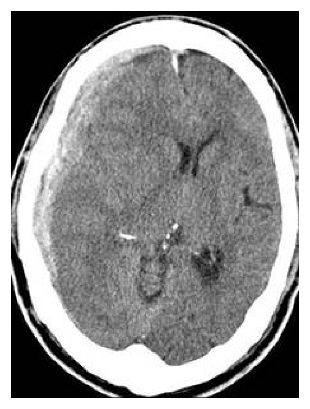
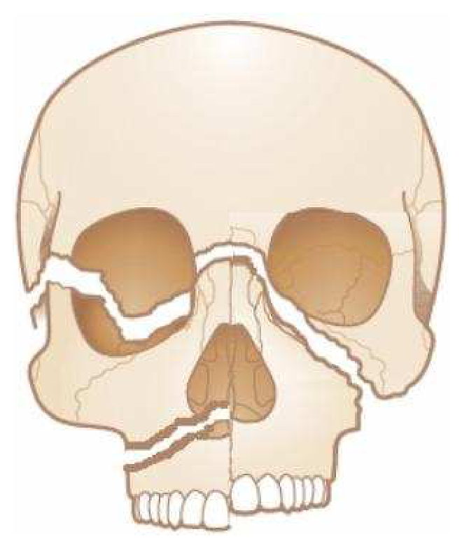
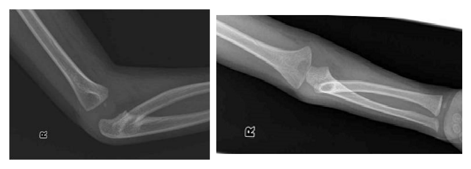
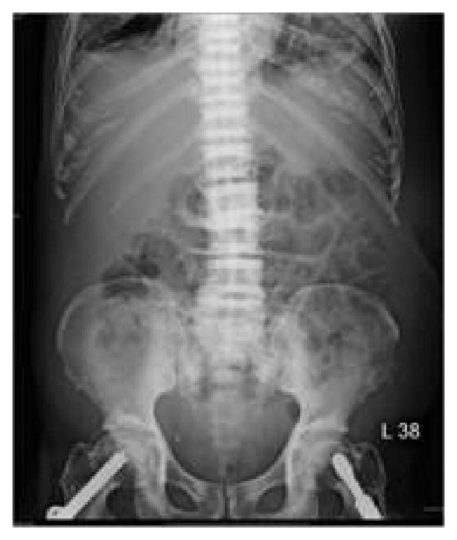
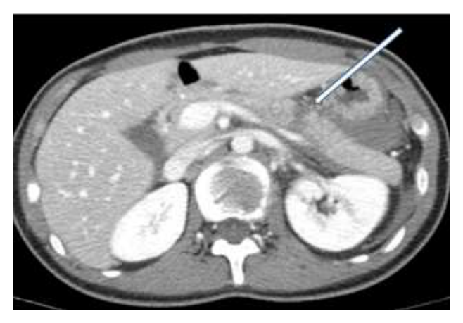
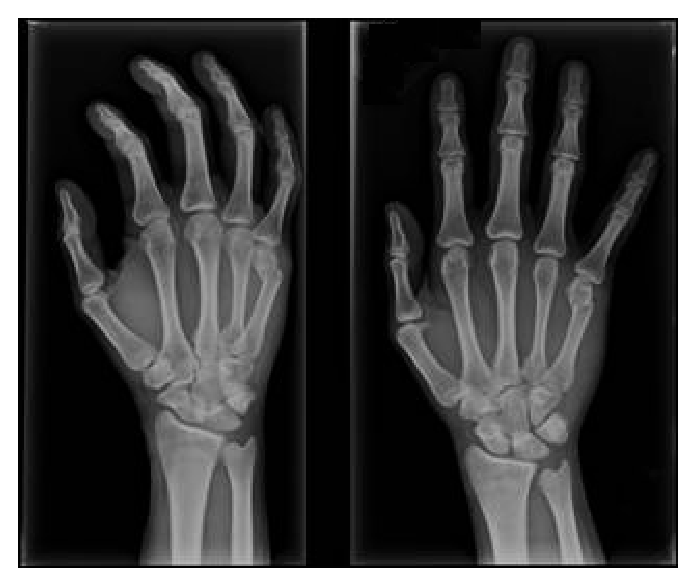

106 年第 1 次醫師醫學（五）（包括外科、骨科、泌尿科等科目及其相關臨床實例與醫學倫理）試題與答案
這一頁是民國 106 年第 1 次醫師醫學（五）（包括外科、骨科、泌尿科等科目及其相關臨床實例與醫學倫理）的整份歷屆試題，共 80 題，題目與標準答案出自考選部「國家考試試題及測驗式試題答案」開放資料，其中 80 題附有詳解。以下逐題列出題幹、選項與答案；要計時作答或記錄成績，請用線上練習。
考選部原始場次代碼：106020
線上作答這一科 →
全部 80 題
第 1 題
有關新生兒薦尾部畸胎瘤（neonatal sacrococcygeal teratoma）的敍述，下列何者錯誤？
- （A）是新生兒畸胎瘤中最常見者
- （B）手術切除時需保留尾骨（coccyx），避免術後馬尾症候群（cauda equina syndrome）發生
- （C）手術切除時需結紮中薦部動脈（middle sacral artery）以減少失血
- （D）大部分屬良性
答案：（B）
詳解與考點
正解：新生兒薦尾部畸胎瘤切除時對尾骨的處理。為降低殘存胚胎細胞造成復發的風險，切除薦尾部畸胎瘤時通常應一併切除尾骨，而非保留尾骨；因此（B）錯誤，故選 B。
A：薦尾部畸胎瘤（sacrococcygeal teratoma）是新生兒最常見的畸胎瘤，敘述正確，故非本題答案。
C：腫瘤可具高度血流，處理中薦部血管有助控制出血，是手術規劃的重要部分，敘述正確。
D：新生兒病例多數為良性，但仍需完整切除與病理評估，敘述正確。
本題考點：薦尾部畸胎瘤（sacrococcygeal teratoma）是常見新生兒畸胎瘤；手術須完整切除腫瘤及尾骨（coccygectomy）以減少復發風險，並注意出血控制。
第 2 題
腹部鈍傷時採用診斷性腹膜沖洗（diagnostic peritoneal lavage）的適應症，下列何者錯誤？
- （A）理學檢查無法判斷的狀況
- （B）脊椎損傷
- （C）有剖腹探查的明顯適應症
- （D）不明原因的休克或是低血壓
答案：（C）
詳解與考點
正解：診斷性腹膜沖洗（diagnostic peritoneal lavage, DPL）用於無法可靠判讀腹部、但仍需確認腹腔出血的鈍傷病人。若已有明顯剖腹探查適應症，應直接手術而非再以 DPL 延誤處置，因此（C）錯誤，故選 C。
A：昏迷、分心傷害等使腹部理學檢查不可靠時，可考慮 DPL 協助偵測腹腔內出血，敘述正確。
B：脊椎損傷可能影響感覺與腹部檢查的可信度，屬可考慮以 DPL 補足評估的情境。
D：不明原因休克或低血壓的鈍傷病人，若懷疑腹腔出血且需要迅速診斷，DPL 可作為快速檢查，敘述正確。
本題考點：診斷性腹膜沖洗（diagnostic peritoneal lavage, DPL）可用於腹部鈍傷且理學檢查不可靠或不明休克時；明確需剖腹探查（laparotomy）的病人不應為診斷檢查延誤手術。
第 3 題
關於老年人接受主要手術（major surgery）時，下列敘述何者錯誤？
- （A）有心肌缺血心臟病並有抽菸，在手術前後期可使用乙型阻斷劑（β-blocker）
- （B）老年人發生無症狀菌尿症（bacteriuria）的機率比較高，手術前應檢查尿液
- （C）雖然老年人有糖尿病的比率較高，但是高血糖（hyperglycemia）並不會增加手術的發病率和死亡率（morbidity andmortality）
- （D）老年人在手術前應評估其肺部功能
答案：（C）
詳解與考點
正解：官方答案為 C。高血糖在手術期並非無害。高血糖會增加感染、傷口癒合不良及其他圍手術期併發症風險，亦與較差預後相關，因此（C）「不會增加發病率和死亡率」錯誤；惟（B）的常規術前尿液檢查亦因手術類型而有爭議。
A：既有穩定使用 β-blocker 者通常應於圍手術期延續；若有新的獨立適應症，須在術前足夠時間開始並評估耐受性，不可在手術當日僅為預防目的例行啟用。
B：老年人較常有無症狀菌尿，但無泌尿道症狀且接受選擇性非泌尿道手術者，不建議常規篩檢；會造成泌尿道黏膜創傷的特定處置才是需篩檢與治療的情境。因此此項過度概括，也是本題的爭議處。
D：老年人術前評估肺部功能與呼吸風險有助降低術後肺部併發症，敘述正確。
本題考點：圍手術期血糖控制（perioperative glycemic control）——高血糖（hyperglycemia）與感染、傷口癒合不良及不良預後相關；老年手術風險評估（preoperative assessment）須涵蓋心肺與共病。
第 4 題
嚴重外傷病患呈現腹內大量出血及休克時，有時必須採用傷害控制手術（damage control surgery）於短時間內來控制出血及其他搶救步驟，以挽救生命。否則會出現致死三元素（lethal triad）。下列何者不屬於lethal triad？
- （A）凝血機能不全（coagulopathy）
- （B）代謝性酸中毒（metabolic acidosis）
- （C）低體溫（hypothermia）
- （D）敗血症（sepsis）
答案：（D）
詳解與考點
正解：嚴重創傷的致死三元素（lethal triad），由低體溫、代謝性酸中毒與凝血機能不全互相惡化而成。敗血症是感染相關的全身反應，不是創傷傷害控制手術所稱的致死三元素，故選 D。
A：凝血機能不全（coagulopathy）會使出血更難控制，是致死三元素之一，故非答案。
B：持續出血與低灌流造成代謝性酸中毒（metabolic acidosis），它會進一步損害凝血與心血管功能，屬致死三元素。
C：低體溫（hypothermia）會抑制凝血酶活性與血小板功能，與酸中毒、凝血異常形成惡性循環，屬致死三元素。
本題考點：傷害控制手術（damage control surgery）先快速止血與控制污染；創傷致死三元素（lethal triad）為低體溫（hypothermia）、代謝性酸中毒（metabolic acidosis）與凝血機能不全（coagulopathy）。
第 5 題
血壓是判定傷病患是否呈現休克的重要指標，當災難事故發生時，若現場並無血壓量測工具時，可藉由橈動脈脈搏（radialpulse）、股動脈脈搏（femoral pulse）及頸動脈脈搏（carotid pulse）之檢測，來估計傷病患之血壓高低。下列為當血壓低於90 mmHg時，三種脈搏消失之先後次序，何者正確？
- （A）股脈搏 → 頸脈搏 → 橈脈搏
- （B）頸脈搏 → 股脈搏 → 橈脈搏
- （C）橈脈搏 → 股脈搏 → 頸脈搏
- （D）頸脈搏 → 橈脈搏 → 股脈搏
答案：（C）
詳解與考點
正解：低血壓時脈搏會先從最末梢、最易受血管收縮影響的部位消失。橈動脈最先消失，其次為股動脈，頸動脈因供應重要器官而最晚仍可觸及，順序為橈脈搏→股脈搏→頸脈搏，故選 C。
A：此順序把股脈搏列在最先消失，但股動脈較橈動脈近心端，低灌流時通常仍較易保留，故錯。
B：頸脈搏是最中央的脈搏之一，嚴重低血壓時仍可能存在，不會先於股脈搏與橈脈搏消失，故錯。
D：此選項同樣將頸脈搏列為最先消失，與休克時優先維持中央灌流的生理反應相反。
本題考點：休克的周邊灌流（peripheral perfusion in shock）——低血壓時末梢脈搏先消失，觸診脈搏由橈動脈（radial pulse）、股動脈（femoral pulse）至頸動脈（carotid pulse）反映循環惡化。
第 6 題
當小客車司機因追撞大貨車，於急救時出現大量血氣胸，必須緊急給予胸管引流治療。有關胸管置放之位置，下列敘述何者正確？
- （A）第四或五肋間，腋中線（4th or 5th intercostal space, mid-axillary line）
- （B）第二肋間，鎖骨中線（2nd intercostal space, mid-clavicular line）
- （C）第六或七肋間，腋中線（6th or 7th intercostal space, mid-axillary line）
- （D）視病患之情況而定
答案：（A）
詳解與考點
正解：大量血氣胸需以胸管持續引流，而非單純前胸針刺減壓。胸管通常置於安全三角區的第 4 或第 5 肋間、腋中線附近，進入肋骨上緣以避開肋間血管神經，故選 A。
B：第 2 肋間鎖骨中線是傳統針刺減壓常考位置，不是大量血氣胸進行正式胸管引流的標準置入位置；它看似是胸腔減壓位置，卻混淆了針刺與胸管。
C：第 6 或第 7 肋間位置過低，增加穿入腹腔、傷及橫膈與腹內器官的風險，故不適當。
D：雖須配合病人體型與影像判斷，但胸管置放仍有安全解剖區域，不能僅以「視情況而定」取代正確位置。
本題考點：胸管引流（tube thoracostomy）用於血胸與氣胸；安全三角區（triangle of safety）常取第 4 或第 5 肋間、腋中線附近，並沿肋骨上緣進針以保護肋間血管神經。
第 7 題
與腹腔內感染（intra-abdominal infections）相關的敘述，下列何者錯誤？
- （A）電腦斷層攝影（abdominal computed tomography）有助於診斷腹腔內感染
- （B）如果沒有妥善處理，會導致多器官功能障礙症候群（multiple organ dysfunction syndrome）
- （C）所有的腹腔內感染都必須手術治療
- （D）老年人及營養不良者之腹腔內感染比較有發生併發症的風險
答案：（C）
詳解與考點
正解：腹腔內感染的治療不等於一律開刀；關鍵是抗生素加上適當感染源控制（source control），而感染源控制可為經皮引流、內視鏡處置或手術。因此（C）錯誤，故選 C。
A：腹部電腦斷層可協助定位膿瘍、穿孔與感染範圍，也有助規劃引流或手術，敘述正確。
B：未控制的腹腔內感染可進展為敗血症與多器官功能障礙症候群（multiple organ dysfunction syndrome），敘述正確。
D：高齡與營養不良會降低生理儲備與免疫功能，腹腔內感染較易出現併發症，敘述正確。
本題考點：腹腔內感染（intra-abdominal infection）須使用抗微生物治療並完成感染源控制（source control）；感染源控制可採經皮引流（percutaneous drainage）或手術，取決於病灶與病人狀況。
第 8 題
進行全靜脈營養（total parenteral nutrition，TPN）時，下列與中央靜脈導管相關之併發症的敘述，何者錯誤？
- （A）導管內血栓（thrombus）
- （B）氣胸（pneumothorax）
- （C）臂叢神經損傷（brachial plexus injury）
- （D）尿路感染（urinary tract infection）
答案：（D）
詳解與考點
正解：「中央靜脈導管相關」的併發症。置入或留置中央靜脈導管可造成局部機械性傷害、氣胸與血栓，但尿路感染並非導管本身的直接併發症，故（D）錯誤，選 D。
A：導管可造成靜脈內皮損傷與血流滯留，導致導管相關血栓（catheter-related thrombosis），敘述正確。
B：鎖骨下或內頸靜脈置管可能傷及胸膜而發生氣胸（pneumothorax），是已知機械性併發症。
C：頸部或鎖骨下區置管時，鄰近神經結構可能受傷，臂叢神經損傷（brachial plexus injury）屬可能的局部併發症。
本題考點：中央靜脈導管（central venous catheter）的併發症包括氣胸（pneumothorax）、血栓（thrombosis）、感染與鄰近構造損傷；尿路感染（urinary tract infection）應另尋泌尿系統相關原因。
第 9 題
最常見轉移性腦瘤之原發處，依發生比例由多到少之排序為何？
- （A）乳房＞肺＞腎＞腸胃道
- （B）肺＞乳房＞腎＞腸胃道
- （C）腸胃道＞腎＞乳房＞肺
- （D）腎＞肺＞乳房＞腸胃道
答案：（B）
詳解與考點
正解：成人最常見的轉移性腦瘤原發腫瘤排序。肺癌是最常見來源，其後依序常見乳癌、腎癌與腸胃道癌，故排序為肺＞乳房＞腎＞腸胃道，選 B。
A：乳癌確實是常見腦轉移來源，但整體而言肺癌更常見，將乳房排在肺之前錯誤。
C：腸胃道癌與腎癌皆可轉移至腦，但並非比肺癌與乳癌更常見，排序顛倒。
D：腎癌可造成腦轉移且病灶常具血管性，卻不是最常見原發處；此選項把腎癌排首位不符常見排序。
本題考點：轉移性腦瘤（brain metastasis）最常見的原發腫瘤為肺癌（lung cancer），其次常見乳癌（breast cancer）；腎癌（renal cell carcinoma）與腸胃道癌（gastrointestinal cancer）亦為重要來源。
第 10 題
下列有關脊神經及支配的肌肉配對，何者錯誤？
- （A）C5－deltoid muscle
- （B）C6－triceps muscle
- （C）L3－quadriceps muscle
- （D）S1－gastronemius muscle
本題送分，無標準答案
詳解與考點
本題官方公告送分。
第 11 題
一位68歲男性因跌倒送來急診，意識狀態模糊，對痛刺激眼睛會張開，且左手會撥開痛刺激，但不會出聲，頭部電腦斷層如下圖所示，下列何者正確？

- （A）出血位置位於硬腦膜下
- （B）出血的來源多半為顱骨骨折造成腦膜動脈破裂而成
- （C）最佳的治療方法為大量的使用降腦壓藥物，避免血塊對腦幹的壓迫
- （D）此病人目前GCS為10分
答案：（A）
詳解與考點
正解：電腦斷層可見右側大腦半球表面有跨越顱縫、呈新月形的高密度顱外軸性出血，並造成腦實質受壓與中線偏移，典型為急性硬腦膜下血腫（acute subdural hematoma）。其常見出血位置即在硬腦膜與蛛網膜之間，故選 A。
B：顱骨骨折造成腦膜動脈破裂是硬腦膜外血腫（epidural hematoma）的典型機轉，影像常呈雙凸透鏡狀，且通常不跨越顱縫；本圖的新月形出血較符合橋靜脈撕裂造成的硬腦膜下血腫。
C：本例已有意識障礙，影像亦見血腫造成明顯腦部壓迫，治療重點應是緊急神經外科評估與血腫清除或減壓手術；降腦壓治療可作為暫時處置，不能以大量藥物取代解除血塊壓迫。
D：對痛刺激睜眼為 E2；左手能撥開痛刺激代表可定位疼痛，為 M5；不會出聲為 V1。因此 GCS=E2+V1+M5=8 分，不是 10 分。
本題考點：急性硬腦膜下血腫（acute subdural hematoma）在 CT 常呈跨顱縫的新月形高密度影，常與橋靜脈（bridging veins）撕裂有關；硬腦膜外血腫（epidural hematoma）則常與腦膜動脈破裂及雙凸透鏡狀血腫相關；格拉斯哥昏迷指數（Glasgow Coma Scale, GCS）由睜眼、語言與動作反應加總。
第 12 題
下列有關脊髓損傷病人使用高劑量皮質類固醇（corticosteroid）的敘述，何者錯誤？
- （A）建議在受傷後8小時內使用
- （B）bolus劑量為30 mg/kg靜脈滴注一小時後，給予5.4 mg/kg/hour靜脈滴注23小時
- （C）使用的藥物是methylprednisolone
- （D）此高劑量的皮質類固醇有相當大的副作用
本題送分，無標準答案
詳解與考點
本題官方公告送分。
第 13 題
下列何者最不適合做腰椎穿刺（lumbar puncture）？
- （A）腦部腫瘤病變
- （B）腦膜炎
- （C）蜘蛛網膜下腔出血
- （D）交通性水腦症（communicating hydrocephalus）
答案：（A）
詳解與考點
正解：腰椎穿刺會降低脊髓腔壓力；若有顱內腫瘤造成占位效應（mass effect）或顱內壓升高，壓力梯度改變可誘發腦疝脫（brain herniation）。因此腦部腫瘤病變最不適合直接做腰椎穿刺，故選 A。
B：腦膜炎常需腰椎穿刺取得腦脊髓液以診斷病原與分析發炎型態；若懷疑顱內壓升高仍須先評估安全性，但腦膜炎本身不是絕對禁忌。
C：蜘蛛網膜下腔出血在初始影像未能證實、但臨床疑慮仍高時，可由腦脊髓液檢查提供診斷線索，並非最不適合的情況。
D：交通性水腦症沒有局部阻塞所致的典型壓力隔離，腰椎穿刺可用於評估或引流試驗，故非本題答案。
本題考點：腰椎穿刺（lumbar puncture）的重要禁忌是顱內占位效應（intracranial mass effect）與腦疝脫風險；腦脊髓液檢查（cerebrospinal fluid analysis）常用於腦膜炎與特定蜘蛛網膜下腔出血的診斷。
第 14 題
腦膜瘤（meningioma）三個最好發之位置為何？
- （A）矢狀竇旁－大腦鐮（parasagittal-falx）、岩骨（petrous bone）、顱凸處（convexity）
- （B）矢狀竇旁－大腦鐮（parasagittal-falx）、顱凸處（convexity）、蝶骨翼（sphenoid wing）
- （C）矢狀竇旁－大腦鐮（parasagittal-falx）、蝶骨平面（planum sphenoidale）、顱凸處（convexity）
- （D）顱凸處（convexity）、蝶骨翼（sphenoid wing）、岩骨（petrous bone）
答案：（B）
詳解與考點
正解：腦膜瘤好發於硬腦膜附著處，最常見的三個部位為顱凸處、矢狀竇旁－大腦鐮區及蝶骨翼。選項（B）恰包含這三個典型位置，故選 B。
A：岩骨區可發生腦膜瘤，但不是取代蝶骨翼而列入最典型三大位置的部位，故不符。
C：蝶骨平面可見腦膜瘤，卻不如蝶骨翼是經典常見位置；它看似同在蝶骨附近，卻混淆了特定顱底位置與常見排序。
D：此選項缺少矢狀竇旁－大腦鐮區，改列岩骨區，因此不是三個最好發位置的組合。
本題考點：腦膜瘤（meningioma）源自蛛網膜帽細胞並多附著硬腦膜；常見位置包括顱凸處（convexity）、矢狀竇旁－大腦鐮（parasagittal-falx）與蝶骨翼（sphenoid wing）。
第 15 題
頭部外傷造成的diffuse axonal injury（DAI），下列敘述何者錯誤？
- （A）病人通常沒有清明期（lucid interval）
- （B）電腦斷層掃描（brain CT）上可能沒有明顯的病灶，但病人卻呈昏迷狀態
- （C）如果病人不幸死亡，解剖上腦部有明顯不正常的外觀
- （D）在胼胝體（corpus callosum）可見出血性壞死的病灶
答案：（C）
詳解與考點
正解：瀰漫性軸索損傷（diffuse axonal injury, DAI）主要是旋轉加速減速造成的顯微軸索損傷，肉眼解剖未必呈現明顯異常。故（C）「腦部有明顯不正常的外觀」錯誤，選 C。
A：DAI 常在受傷當下即造成持續意識障礙或昏迷，通常沒有硬腦膜外血腫常見的清明期（lucid interval），敘述正確。
B：初期腦部電腦斷層可能沒有明顯病灶，但病人可嚴重昏迷；這看似影像與症狀不相稱，正是 DAI 的典型特徵之一。
D：胼胝體（corpus callosum）是 DAI 常見受傷部位，可出現出血性病灶，敘述正確。
本題考點：瀰漫性軸索損傷（diffuse axonal injury, DAI）由旋轉性加速減速造成，常見於胼胝體（corpus callosum）等深部白質；腦部 CT（brain CT）可早期不顯著，MRI 對病灶較敏感。
第 16 題
眼瞼下垂（ptosis）依照其嚴重度來分，兩側眼瞼水平高度相差4 mm以上時屬於：
- （A）嚴重（severe）
- （B）中等（moderate）
- （C）輕微（mild）
- （D）正常（normal）
答案：（A）
詳解與考點
正解：雙側眼瞼水平高度相差 4 mm以上，這是以眼瞼下垂量分級時的嚴重度門檻；下垂量達 4 mm以上屬嚴重眼瞼下垂（severe ptosis），故選 A。
B：中等眼瞼下垂（moderate ptosis）的下垂量未達本題的 4 mm以上門檻，不能用來描述本例。
C：輕微眼瞼下垂（mild ptosis）只代表較小幅度的眼瞼高度差；本題高度差已達嚴重分級，故錯。
D：正常（normal）眼瞼應大致對稱，兩側相差 4 mm以上已有明顯下垂，不可能視為正常。
本題考點：眼瞼下垂（ptosis）分級——比較兩側上眼瞼位置的差異；下垂量愈大代表嚴重度愈高，4 mm以上為嚴重（severe）下垂。
第 17 題
下圖為一個顏面部創傷來急診的病人，急診醫師安排臉部電腦斷層，顏面骨有骨折的狀況，其受傷的情形分類為：

- （A）右側Le Fort I + II，左側Le Fort III
- （B）右側Le Fort II + III，左側Le Fort I
- （C）右側Le Fort I + III，左側Le Fort II
- （D）右側Le Fort I + II，左側Le Fort IV
答案：（C）
詳解與考點
正解：依正面觀判讀時，圖左為病人右側。病人右側可見上顎齒槽上方的水平骨折線，符合 Le Fort I；另有經鼻額部、眶緣與顴骨區向外側延伸的高位中臉骨折，符合 Le Fort III。病人左側骨折線則呈由鼻樑向眶下緣及上顎延伸的金字塔形，符合 Le Fort II，故選 C。
A：病人右側除 Le Fort I 外，骨折高度已涉及顴骨與眶外側的顱顏分離型態，較符合 Le Fort III 而非 Le Fort II；病人左側也不是 Le Fort III。
B：病人右側確有 Le Fort III，但圖中同時有上顎水平骨折線，不能漏掉 Le Fort I；病人左側的金字塔形骨折亦非 Le Fort I。
D：病人右側的組合應為 Le Fort I 加 Le Fort III；病人左側為 Le Fort II，且 Le Fort 骨折分類並無 Le Fort IV。
本題考點：Le Fort 顏面中段骨折（Le Fort fractures）——Le Fort I 為水平上顎骨折；Le Fort II 為經鼻樑、眶下緣與上顎的金字塔形骨折；Le Fort III 為顱顏分離（craniofacial dysjunction），涉及鼻額、眶與顴骨區。
第 18 題
下列有關下頜骨骨折（mandibular fractures）的敘述，何者錯誤？
- （A）下頜骨的組成包含下頜骨聯合（symphysis），下頜骨體（body）、下頜角（angle）、下頜枝（ramus）、下頜髁突（condyle）和下頜骨喙突（coronoid process）
- （B）下頜骨骨折可以依據上下頜齒列的關係，Angle classification system分類為Class I、 Class II 及Class III
- （C）上下頜齒列固定復位可用於無明顯位移、無齒列錯位及顳顎關節（temporo-mandibular joint）活動正常之情形
- （D）手術治療主要為骨折處和上下頜齒列固定復位， 固定時間越久越好，不會有顳顎關節僵硬的問題
答案：（D）
詳解與考點
正解：題目問錯誤敘述，關鍵在下頜骨骨折固定後仍須避免顳顎關節僵硬。固定的目標是恢復咬合與骨折穩定，而非愈久愈好；長期上下頜齒列固定會限制張口，反而可能造成顳顎關節僵硬與功能障礙，故錯誤的是 D。
A：下頜骨可依解剖位置分為聯合、骨體、骨角、骨枝、髁突與喙突等區域，這些位置也用於描述骨折部位，敘述正確，故非答案。
B：下頜骨骨折可依咬合關係描述齒列錯位，Class I、II、III 的分類是在臨床上辨識咬合異常的方式之一，敘述不構成本題錯誤。
C：無明顯移位、無齒列錯位且顳顎關節活動正常的穩定骨折，可採上下頜齒列固定復位或保守固定，敘述正確，故非答案。
本題考點：下頜骨骨折（mandibular fracture）處置——治療兼顧骨折穩定、原有咬合（occlusion）與顳顎關節（temporomandibular joint）活動；固定過久會增加關節僵硬風險。
第 19 題
下列何者是造成傷口攣縮（wound contracture）的主要細胞？
- （A）肌纖維母細胞（myofibroblast）
- （B）B-淋巴球（B-lymphocyte）
- （C）T-淋巴球（T-lymphocyte）
- （D）巨噬細胞（macrophage）
答案：（A）
詳解與考點
正解：傷口攣縮的關鍵是肉芽組織中能收縮、拉近傷口邊緣的細胞。肌纖維母細胞（myofibroblast）兼具纖維母細胞製造基質的能力與平滑肌樣收縮特性，透過細胞骨架收縮使創緣向內移動，是傷口攣縮的主要細胞，故選 A。
B：B-淋巴球（B-lymphocyte）主要參與體液免疫與抗體生成，並非直接牽拉傷口邊緣的效應細胞。
C：T-淋巴球（T-lymphocyte）調節細胞免疫與發炎反應，雖會影響傷口癒合環境，卻不是造成機械性攣縮的主要細胞。
D：巨噬細胞（macrophage）能清除壞死組織並分泌促進修復的訊號，容易被誤認為主導所有修復步驟；但實際執行傷口收縮的是肌纖維母細胞。
本題考點：傷口癒合（wound healing）——肌纖維母細胞（myofibroblast）在增生期促成傷口攣縮（wound contraction）；巨噬細胞（macrophage）則主要負責清除與調控修復訊號。
第 20 題
根據American Burn Association所訂，須到灼傷中心住院的情況，下列敘述何者錯誤？
- （A）二及三度燒傷大於10% TBSA
- （B）三度燒傷
- （C）inhalation injury
- （D）5歲以下，50歲以上，二及三度燒傷大於5% TBSA
答案：（D）
詳解與考點
正解：題目問錯誤敘述。American Burn Association 的灼傷中心轉診判準，重點是年齡極端者只要有一定面積的部分厚度燒傷即應提高警覺；選項把年齡界線寫成 5歲以下、50歲以上，且把面積門檻寫成二、三度燒傷大於 5% TBSA，並不符合此處的標準表述，故 D 為錯誤。
A：二度及三度燒傷面積大於 10% TBSA 代表傷勢範圍較大，屬應轉介灼傷中心的重要情況，敘述正確，故非答案。
B：三度燒傷（full-thickness burn）因深度與功能、重建需求，即使面積不大也可能需要灼傷專科評估，敘述正確。
C：吸入性損傷（inhalation injury）可迅速造成氣道問題及全身性併發症，需在灼傷中心處置，敘述正確，故非答案。
本題考點：灼傷中心轉診（burn center referral）——評估燒傷深度、全身表面積（total body surface area, TBSA）、年齡與吸入性損傷；全層燒傷與吸入性損傷皆是重要轉介指標。
第 21 題
下列有關microvascular surgery時使用anticoagulant運用的敘述，何者錯誤？
- （A）low dose aspirin的anti-platelet效果不錯
- （B）heparin可全身性或局部使用
- （C）fibrinolytic agent於microanastomosis thrombosis時有幫忙
- （D）使用anticoagulant可使free flap transfer之成功率大量提高
答案：（D）
詳解與考點
正解：題目問錯誤敘述，關鍵在游離皮瓣（free flap）成功的核心是精準吻合、避免血管扭折或壓迫，以及及早發現血栓並再探查；抗凝血藥只能在特定情況輔助，不能使成功率「大量提高」。而且全身性抗凝會增加出血風險，故 D 的過度概括為錯誤。
A：低劑量 aspirin 具有抑制血小板聚集（antiplatelet）作用，可在部分顯微血管手術的抗栓策略中使用，敘述正確，故非答案。
B：heparin 可依手術情境採局部沖洗、局部使用或全身性給予，但須權衡出血風險，敘述正確。
C：發生顯微血管吻合處血栓時，纖溶藥物（fibrinolytic agent）可作為部分救援處置的輔助；它看似萬用，但仍不能取代移除血栓與修正吻合處的手術處置，敘述本身正確。
本題考點：顯微血管手術（microvascular surgery）——皮瓣存活仰賴可靠的微血管吻合（microanastomosis）與血流監測；抗血小板藥、heparin、纖溶治療為選擇性輔助，須平衡血栓與出血。
第 22 題
病人於接受心臟手術後，轉入加護病房觀察。此時他的血壓由術後的140/80 mmHg 下降至80/60 mmHg，肺動脈壓由 30/18mmHg上升至56/30 mmHg，肺楔壓為20 mmHg，中心靜脈壓為15 mmHg，心跳為130/min。下列立即處置何者適當？①給予血管放鬆劑，降低後負荷 ②給予抗心律不整藥，改善心跳過速 ③給予裝置葉克膜 (ECMO) ④給予強心劑，增強心肌收縮力
- （A）①②③
- （B）僅①③
- （C）②④
- （D）僅④
答案：（D）
詳解與考點
正解：術後血壓由 140/80 mmHg 降至 80/60 mmHg，同時肺動脈壓、肺楔壓與中心靜脈壓都上升，合併心跳 130/min，表示心輸出量下降而左右心充盈壓升高，最符合急性心肌收縮功能不全造成的心因性休克。立即應以強心劑（inotrope）增強心肌收縮力，故只有④正確，選 D。
A：①血管放鬆劑會降低後負荷，但此刻病人已明顯低血壓；②心跳過速多為低心輸出量的代償，未先改善灌流即以抗心律不整藥壓低心率可能更惡化血流動力學；③ ECMO 是難治性循環衰竭的機械性支持，非題幹所示第一線立即處置，故①②③的組合錯誤。
B：①在低血壓時不宜作為優先處置，故包含①的組合不正確；③是否需 ECMO 要看對藥物與可逆病因處置的反應，不能取代先給予④。
C：②未處理造成心跳過速的低心輸出量原因，故②④的組合不如僅④適當。
本題考點：心因性休克（cardiogenic shock）——低血壓合併肺楔壓與中心靜脈壓上升提示泵衰竭；強心劑（inotrope）可暫時提升收縮力與器官灌流，機械循環支持須依反應與病因評估。
第 23 題
下列病患中，何者並不適宜成為心臟移植的受贈者？
- （A）63歲男性罹患嚴重冠狀動脈疾病，所有內科療法及外科手術療法皆無法改善心肌血液灌注
- （B）50歲男性罹患肥大性心肌病變，經心肌切除手術後仍為末期心衰竭
- （C）55歲男性罹患末期心衰竭以及肺氣腫合併肺高壓者（pulmonary vascular resistance > 5 Wood units）
- （D）22歲女性罹患良性心臟內腫瘤合併反覆性心室性頻脈，無法以外科手術切除者
答案：（C）
詳解與考點
正解：心臟移植後，受贈者右心室必須承受原有肺循環阻力。肺氣腫合併嚴重肺高壓，且肺血管阻力（pulmonary vascular resistance）大於 5 Wood units，代表肺循環阻力顯著升高，移植後易發生急性右心衰竭，因此 C 不適宜成為受贈者。只有已證實對降低肺壓處置無反應時，才可稱為固定性肺高壓。
A：嚴重冠狀動脈疾病在所有內外科血運重建方式皆無效時，若已為末期心衰竭，可成為心臟移植的適應情境，故非答案。
B：肥大性心肌病變經手術治療後仍進展為末期心衰竭，屬可考慮心臟移植的情況，敘述不構成排除條件。
D：無法切除的良性心臟腫瘤若造成反覆、難控制的心室性頻脈，可能嚴重危及生命；在其他治療不可行時可考慮移植，故非最不適宜者。
本題考點：心臟移植（heart transplantation）受贈評估——末期心衰竭且無其他有效治療可列入評估；固定性肺高壓（fixed pulmonary hypertension）與高肺血管阻力會使移植心右心室衰竭風險升高。
第 24 題
下列關於急性主動脈剝離症的敘述，何者正確？①主動脈剝離的範圍若僅包含胸部降主動脈，則大多需手術 ②主動脈剝離的範圍若包含胸部升主動脈，則大多需緊急手術 ③主動脈剝離的範圍若僅包含胸部降主動脈，大多不可用主動脈內徑血管支架（endovascular stent grafts）治療 ④主動脈剝離的範圍若包含胸部升主動脈，大多不可用主動脈內徑血管支架（endovascular stent grafts）治療
- （A）①②③
- （B）僅①③
- （C）②④
- （D）僅④
答案：（C）
詳解與考點
正解：剝離是否包含升主動脈。包含升主動脈的 Stanford type A 主動脈剝離易有心包填塞、主動脈瓣逆流與冠狀動脈灌流障礙，通常需緊急手術，所以②正確；type A 的病灶位於升主動脈，常規胸主動脈腔內支架不適用，所以④正確。只有②④正確，選 C。
A：①把僅含降主動脈的 Stanford type B 說成大多需手術，忽略了無併發症者多先以藥物控制；③也錯在宣稱 type B 大多不可使用腔內支架，實際上有併發症或適當解剖條件時可用，故組合錯誤。
B：①與③皆為錯誤敘述，不能作為正確組合。type B 看似也很危急，但其處置關鍵是有無破裂、器官缺血、持續疼痛或難控高血壓等併發症。
D：④正確，但漏掉同樣正確的②，故不完整。
本題考點：急性主動脈剝離（acute aortic dissection）——Stanford type A 涉及升主動脈，通常緊急開放手術；Stanford type B 限於降主動脈，無併發症時多先藥物治療，必要時考慮胸主動脈腔內修復（TEVAR）。
第 25 題
一位 69歲男性病人因急性心肌梗塞住院。五天後，病人呼吸較喘，身體檢查顯示有新的心尖部心縮期雜音、血壓80/50mmHg、中心靜脈壓 30 mmHg、胸部 X 光顯示肺水腫現象。下列敘述何者錯誤？①診斷為心室中隔破裂 ②須裝置主動脈內氣球幫浦 ③不須緊急手術 ④手術死亡率約10%至20%
- （A）①②③
- （B）僅①③
- （C）②④
- （D）僅④
答案：（B）
詳解與考點
正解：急性心肌梗塞後第 5 天出現新的心尖收縮期雜音、肺水腫與休克，最應想到乳頭肌斷裂造成急性嚴重二尖瓣逆流（acute severe mitral regurgitation），而不是心室中隔破裂；此為機械性併發症，需以主動脈內氣球幫浦暫時穩定血流動力學並緊急手術。因此①與③錯誤，選 B。
A：①錯在把心尖收縮期雜音與急性肺水腫直接診斷為心室中隔破裂；③錯在否定緊急手術，兩者皆是本題要找的錯誤敘述，（A）雖含①、③，卻多列正確的②，因此不是正確組合。
C：②主動脈內氣球幫浦可作為降低後負荷、改善前向血流的橋接支持；④手術死亡率確實偏高，但此組合未包含①、③兩個錯誤敘述，故不對。
D：④並非本題明確錯誤之處，且漏掉①與③，故不完整。
本題考點：心肌梗塞機械性併發症（mechanical complications of myocardial infarction）——乳頭肌斷裂（papillary muscle rupture）造成急性二尖瓣逆流，表現為肺水腫與心因性休克；以機械循環支持橋接緊急外科修補或置換。
第 26 題
有關主動脈瓣膜置換的手術適應症，下列何者錯誤？
- （A）一旦有症狀且合併嚴重主動脈瓣膜逆流，需要手術
- （B）無症狀但合併嚴重主動脈瓣膜逆流及左心室射出比率< 50%，需要手術
- （C）嚴重主動脈瓣膜逆流且合併三條冠狀動脈疾病，需要手術
- （D）無症狀但合併主動脈瓣膜逆流、左心室射出比率> 50%及end-diastolic dimention < 70 mm，需要手術
答案：（D）
詳解與考點
正解：無症狀慢性嚴重主動脈瓣逆流是否手術，要看左心室收縮功能下降或明顯擴張等失代償證據。D 所述左心室射出分率大於 50%、舒張末期內徑小於 70 mm，沒有提出需手術的失代償條件，卻直接主張手術，因此為錯誤敘述。
A：嚴重主動脈瓣逆流一旦出現症狀，代表臨床失代償，通常需主動脈瓣手術處理，敘述正確，故非答案。
B：無症狀但射出分率低於 50% 已反映左心室收縮功能受損，是手術的重要適應情境，敘述正確。
C：嚴重主動脈瓣逆流合併需接受冠狀動脈繞道手術的三條冠狀動脈疾病，可同時處理瓣膜問題，敘述正確，故非答案。
本題考點：慢性主動脈瓣逆流（chronic aortic regurgitation）——手術決策看症狀、左心室射出分率（left ventricular ejection fraction）與心室擴張；無症狀且左心室功能與尺寸未達失代償門檻者通常持續追蹤。
第 27 題
肺癌手術後，死亡原因最常見的是：
- （A）肺炎併敗血症（pneumonia with sepsis）
- （B）心衰竭（heart failure）
- （C）腎衰竭（renal failure）
- （D）肝衰竭（hepatic failure）
答案：（A）
詳解與考點
正解：肺癌切除術後最常見的致死原因是肺部感染進展為敗血症。術後疼痛、肺容積減少、分泌物排除不良與既有吸菸相關肺功能受損，均會增加肺炎風險；一旦併發敗血症可快速導致多器官衰竭，故選 A。
B：心衰竭可見於原有心血管疾病或術後心律不整，但不是肺癌術後最常見的死亡原因。
C：腎衰竭多是休克、敗血症或腎毒性因素造成的併發結果，非此類手術後最常見的主要死因。
D：肝衰竭不是肺癌切除術後的典型常見死亡原因，故不符合題目問法。
本題考點：肺切除術後併發症（postoperative complications after lung resection）——呼吸道清痰不良與肺炎（pneumonia）是重要併發症；敗血症（sepsis）可造成術後死亡。
第 28 題
下列何者不是支氣管擴張症做單純肺葉切除手術適應症？
- （A）病人內科治療失敗合併反覆肺炎
- （B）反覆咳血影響正常生活
- （C）雙側嚴重支氣管擴張症
- （D）侷限型單肺葉支氣管擴張症
答案：（C）
詳解與考點
正解：單純肺葉切除的前提是病灶侷限於可切除的單一肺葉，且切除後仍可保留足夠肺功能。雙側嚴重支氣管擴張症代表病灶廣泛，單純切除一個肺葉無法根治主要問題，還會犧牲肺功能，因此 C 不是適應症。
A：內科治療失敗且反覆肺炎，若病灶局限，手術可移除反覆感染的肺葉，敘述可作為手術考量，故非答案。
B：反覆咳血嚴重影響生活，若出血來源侷限且保守或介入治療無效，可考慮肺葉切除，敘述正確。
D：侷限型單肺葉支氣管擴張症最符合解剖性肺葉切除的條件，故非答案。
本題考點：支氣管擴張症（bronchiectasis）手術——肺葉切除（lobectomy）適用於侷限性病灶、反覆感染或難治性咳血；雙側瀰漫性病灶通常不宜以單純肺葉切除處理。
第 29 題
下列有關咳血之敘述，何者正確？
- （A）大量咳血一般被定義為24小時內，出血超過300 mL
- （B）就診斷和治療而言，硬式支氣管鏡較軟式支氣管鏡為佳
- （C）血管攝影檢查一定要做
- （D）血管栓塞術對於出血控制通常無效
答案：（B）
詳解與考點
正解：咳血的優先順序是維持氣道通暢、定位出血側並控制出血。硬式支氣管鏡（rigid bronchoscopy）管腔較大，可抽吸大量血塊、維持通氣並進行局部止血，對大量或持續咳血的診斷與治療較軟式支氣管鏡有優勢，故選 B。
A：大量咳血的定義在不同文獻與臨床情境有差異，本題採功能性判準，是否威脅氣道與氣體交換比單一出血量更重要；24 小時超過 300 mL 不符合本題用以判定大量咳血的門檻，故非正確敘述。
C：血管攝影用於懷疑支氣管動脈出血且準備栓塞時很重要，但不是每位咳血病人都一定要做；輕微咳血可先依臨床與影像評估。
D：支氣管動脈栓塞術（bronchial artery embolization）常可有效暫時控制出血；它看似不能根治病因，但「通常無效」正好把其止血價值說反了。
本題考點：咳血（hemoptysis）處置——先保護氣道與維持氧合；硬式支氣管鏡（rigid bronchoscopy）利於大量出血的抽吸與止血；支氣管動脈栓塞（bronchial artery embolization）是重要止血方式。
第 30 題
關於原發性氣胸（primary pneumothorax）的敘述，何者錯誤？
- （A）診斷可由病史、理學檢查及X光確定
- （B）CT routine不需要
- （C）慢性阻塞肺病（COPD）引起的氣胸為續發性（secondary）氣胸
- （D）插胸管是絕對需要的
答案：（D）
詳解與考點
正解：題目問錯誤敘述。原發性氣胸（primary spontaneous pneumothorax）的處置取決於症狀、血流動力學穩定度與氣胸大小；穩定、症狀輕微者可觀察、給氧或採針吸，並非每人都絕對需要插胸管，故 D 錯誤。
A：典型病史、理學檢查與胸部 X 光通常已可診斷氣胸，敘述正確，故非答案。
B：大多數原發性氣胸初次診斷不需例行 CT；CT 用於診斷不明、評估肺泡或手術規劃等特定情況，敘述正確。
C：COPD 患者因既有肺實質疾病而發生氣胸，屬續發性自發性氣胸（secondary spontaneous pneumothorax），敘述正確。
本題考點：原發性自發性氣胸（primary spontaneous pneumothorax）——診斷以臨床與胸部 X 光為主；處置依症狀與氣胸範圍分層，觀察、針吸與胸管引流（tube thoracostomy）各有適用情境。
第 31 題
下列那一種肝臟良性腫瘤，有較高之惡性轉變的可能性，建議手術切除？
- （A）cyst
- （B）adenoma
- （C）focal nodular hyperplasia
- （D）hemangioma
答案：（B）
詳解與考點
正解：肝細胞腺瘤（hepatocellular adenoma）具有出血與惡性轉變的風險，尤其腫瘤較大、持續增大或具有高風險分子特徵時，常建議切除；在題目列出的良性肝腫瘤中，最符合的是 adenoma，故選 B。
A：單純肝囊腫（simple hepatic cyst）多為良性且無症狀，可追蹤或僅在有症狀、感染等情況介入，並非因較高惡性轉變風險而例行切除。
C：局部結節性增生（focal nodular hyperplasia）通常沒有明顯惡性轉變傾向；它看似也是肝臟實質性腫瘤，但多可依影像診斷後觀察。
D：血管瘤（hemangioma）是常見良性肝腫瘤，多數不會惡性轉變，除非症狀、診斷不確定或罕見併發症，否則不需常規切除。
本題考點：良性肝腫瘤（benign liver tumors）——肝細胞腺瘤（hepatocellular adenoma）要留意出血與惡性轉變；局部結節性增生（focal nodular hyperplasia）及血管瘤（hemangioma）通常以追蹤為主。
第 32 題
王先生因為腹膜炎接受手術，術中發現空腸、迴腸及右側結腸呈現缺血壞死現象，下列何者是最可能的診斷？
- （A）superior mesenteric artery thrombosis
- （B）inferior mesenteric artery embolism
- （C）superior mesenteric vein thrombosis
- （D）non-occlusive mesentery ischemia
答案：（A）
詳解與考點
正解：空腸、迴腸與右側結腸同時缺血壞死，覆蓋範圍正是上腸繫膜動脈（superior mesenteric artery, SMA）供應的中腸。SMA 血栓形成造成大範圍動脈灌流中斷，可導致腹膜炎與腸管壞死，故選 A。
B：下腸繫膜動脈（inferior mesenteric artery）主要供應左側結腸與直腸上段，無法解釋空腸、迴腸及右側結腸同時壞死。
C：上腸繫膜靜脈血栓（superior mesenteric vein thrombosis）也可造成中腸缺血，但通常是靜脈鬱血性、漸進性表現；題幹以廣泛動脈供應區缺血壞死問最可能診斷，較符合 SMA 血栓。
D：非阻塞性腸繫膜缺血（non-occlusive mesenteric ischemia）多見於低心輸出量或強烈血管收縮的全身低灌流狀態；題幹未提供此類誘因，故不如 SMA 血栓相符。
本題考點：急性腸繫膜缺血（acute mesenteric ischemia）——上腸繫膜動脈（SMA）供應空腸、迴腸與右側結腸；SMA 阻塞可造成中腸大範圍缺血壞死與腹膜炎。
第 33 題
下列有關肝膿瘍之敘述，何者正確？
- （A）大部分的肝膿瘍發生在右肝
- （B）大部分的肝膿瘍都是單一致病菌引起
- （C）最常見的致病菌為Staphylococcus aureus
- （D）80～90%病人可以從血液培養出致病菌
答案：（A）
詳解與考點
正解：肝膿瘍最常發生在右肝葉（right hepatic lobe）。右肝葉體積較大，且腸繫膜靜脈回流經門靜脈分布至肝臟時，較常累及右葉，因此 A 正確。
B：化膿性肝膿瘍常為多種腸道菌或厭氧菌的混合感染，不能概括為大部分均由單一致病菌引起。
C：常見致病菌與膽道、門靜脈或血行來源相關，腸桿菌科細菌、鏈球菌與厭氧菌較常見；Staphylococcus aureus 並非最常見病原。
D：血液培養有助找出菌血症與指引抗生素，但陽性率並非高達 80～90%，故此敘述過度誇大。
本題考點：化膿性肝膿瘍（pyogenic liver abscess）——右肝葉（right lobe）較常受累；病原可為多菌種感染，血液與膿液培養可協助選擇抗菌治療，並常需引流評估。
第 34 題
下列關於疝氣之敘述，何者錯誤？
- （A）股疝氣（femoral hernia）及間接型腹股溝疝氣（indirect type inguinal hernia）都以右側為主
- （B）股疝氣最易造成腸子壞死（20%），故應在初次診斷時就接受手術治療
- （C）切口疝氣（incisional hernia）都可以直接縫合（primary closure），即使疝氣洞口大於5公分也不需要使用人工網膜（prosthetic material）來縫合
- （D）肥胖及腹部手術術後傷口感染都能造成切口疝氣（incisional hernia）的發生率增加
答案：（C）
詳解與考點
正解：題目問錯誤敘述。大型切口疝氣直接縫合張力高、復發率高，通常須評估人工網膜（mesh）修補以降低復發；C 卻稱所有切口疝氣都可直接縫合，即使洞口大於 5公分也不需網膜，為錯誤敘述。
A：股疝氣與間接型腹股溝疝氣確有右側較常見的傾向，敘述正確，故非答案。
B：股疝氣疝頸狹窄，較易嵌頓與絞扼造成腸缺血壞死，因此初次診斷後應積極手術處理，敘述正確。
D：肥胖增加腹壁張力，術後傷口感染會削弱筋膜癒合，兩者均增加切口疝氣風險，敘述正確，故非答案。
本題考點：切口疝氣（incisional hernia）——大型缺損的直接縫合（primary closure）復發風險高，常以人工網膜（mesh repair）進行無張力修補；肥胖與傷口感染是重要危險因子。
第 35 題
根據first-order kinetics，喝完200毫升開水多久後，胃裡一半的水會排空至十二指腸？
- （A）5分鐘
- （B）12分鐘
- （C）20分鐘
- （D）35分鐘
答案：（B）
詳解與考點
正解：first-order kinetics，也就是排空速率與胃內剩餘量成正比；題目問的是一半 200 mL 水離開胃的時間，正是胃排空半衰期（gastric emptying half-time）。清水的半排空時間約為 12分鐘，因此胃內由 200 mL 剩 100 mL、另 100 mL 進入十二指腸時，選 B。
A：5分鐘過短，尚未達清水胃排空的一半；它看似符合液體排空較快的直覺，但 first-order kinetics 問的是固定的半排空時間。
C：20分鐘超過本題所用的清水半排空時間，會代表胃內已少於一半的水量。
D：35分鐘更長，無法對應 200 mL 清水排空一半的時間。
本題考點：一階動力學（first-order kinetics）——排空速率與剩餘量成比例；半衰期（half-life）是剩餘量由 200 mL 降為 100 mL 的時間，本題清水胃排空半時間採約 12分鐘。
第 36 題
進行期胃癌之肉眼觀察形態有四種。下列敘述何者錯誤？
- （A）type II，潰瘍外觀其邊緣隆起與周邊之黏膜界限清晰
- （B）type III，潰瘍外觀其邊緣隆起與周邊黏膜界限不清
- （C）type IV，胃壁瀰漫性浸潤無明顯之隆起或潰瘍
- （D）臺灣以type II較多
答案：（D）
詳解與考點
正解：題目問進行期胃癌（advanced gastric cancer）肉眼型態的錯誤敘述。依本題採用的流行病學判準，臺灣進行期胃癌以 Borrmann type III 較常見；（D）將 type II 說成較多，故為錯誤。
A：Borrmann type II 是邊緣隆起、界限清楚的潰瘍型腫瘤，敘述正確，故非答案。
B：Borrmann type III 為邊緣隆起但與周邊黏膜界限不清的潰瘍浸潤型，敘述正確。
C：Borrmann type IV 為瀰漫浸潤型，胃壁變硬增厚而可無明顯隆起或潰瘍，與皮革胃（linitis plastica）概念相近，敘述正確。
本題考點：Borrmann 分型（Borrmann classification）——進行期胃癌依肉眼型態分為息肉型、界限清楚潰瘍型、浸潤潰瘍型與瀰漫浸潤型；type IV 可呈皮革胃（linitis plastica）表現。
第 37 題
李先生因為解黑便三天，且清晨開始有吐血的情形而被送至急診處。需要及早照會外科手術治療的適應症，下列何者錯誤？
- （A）胃鏡檢查結果為改良強生分類第五型（modified Johnson classification V）胃潰瘍
- （B）年齡大於六十歲
- （C）十二指腸潰瘍直徑大於二公分
- （D）潰瘍底部有可見血管
答案：（A）
詳解與考點
正解：上消化道潰瘍出血時，哪些情況須及早照會外科；（A）改良 Johnson 第 V 型胃潰瘍的分類位置本身不是出血病人早期手術的標準適應症，故此敘述錯誤。決定是否手術應以持續或再出血、內視鏡止血失敗及高危出血表現等為核心，而不是只憑潰瘍分型。
B：年齡大於 60 歲是潰瘍出血不良預後因子；高齡者對失血與再出血的耐受較差，會降低繼續保守處置的門檻，故屬及早外科評估的高危線索。
C：十二指腸潰瘍直徑大於 2 cm 代表潰瘍較大，可能侵蝕較大的血管且內視鏡止血較困難，是再出血與手術需求升高的線索。
D：潰瘍底部可見血管是高風險內視鏡徵象，表示近期或持續出血的機會高；它看似只是胃鏡描述，卻直接影響再出血風險與手術諮詢時機，故非錯誤敘述。
本題考點：消化性潰瘍出血（peptic ulcer bleeding）的危險分層；外科治療（surgical management）主要考量止血失敗、持續或再出血及高危臨床與內視鏡徵象；Johnson 分類（Johnson classification）是胃潰瘍位置分類，不能單獨取代出血風險判斷。
第 38 題
對於無法手術的轉移性胰臟內分泌瘤病患，可使用的治療中，何者正確？
- （A）hypergastrinemia可以diazoxide治療
- （B）對於gastrinoma引起的腸胃道急性出血，使用proton pump inhibitors是無效的
- （C）儘可能以手術切除metastatic islet cell carcinoma（cytoreduction surgery）後，肝臟轉移的部分可以肝動脈栓塞來治療
- （D）轉移到骨骼的metastatic islet cell carcinoma還是可以考慮以手術切除之
本題送分，無標準答案
詳解與考點
本題官方公告送分。
第 39 題
26歲男性因體重120公斤至減重中心求診，他身高172公分，下列關於減重手術的說明何者錯誤？
- （A）限制型術式（restrictive procedures）減重效果較吸收不良型術式（malabsorptive procedures）低
- （B）限制型術式（restrictive procedures）的術後併發症及死亡率較吸收不良型術式（malabsorptive procedures）低
- （C）吸收不良型術式（malabsorptive procedures）手術後，術前合併症 （comorbidity）的治癒率較限制型術式（restrictiveprocedures）高
- （D）限制型術式（restrictive procedures）的手術適應症body mass index值較吸收不良型術式（malabsorptive procedures）低
答案：（D）
詳解與考點
正解：限制型與吸收不良型減重手術的取捨；術式適應症不是以「限制型的 BMI 門檻較低」作為固定對照，因此（D）把兩類術式的選擇簡化為單一、方向固定的 BMI 關係，敘述錯誤。病人的 BMI 約為 120 ÷ 1.72² ≈ 40.6 kg/m²，是否手術仍須合併共病症、風險與可長期追蹤性整體評估。
A：限制型術式主要減少胃容積與進食量，通常減重幅度小於兼具吸收不良效果的術式，敘述正確。
B：限制型術式的解剖重建較少，整體手術複雜度與營養吸收障礙通常較低；因此其術後併發症與死亡風險相對較低，敘述正確。
C：吸收不良型術式往往帶來較大的體重下降，代謝性共病症改善或緩解也可較明顯；它看似因風險較高而不應選用，但風險與療效是需一併權衡的兩面，故敘述正確。
本題考點：減重手術（bariatric surgery）的術式比較；限制型術式（restrictive procedures）與吸收不良型術式（malabsorptive procedures）在減重效果、併發症及營養風險間的取捨；身體質量指數（body mass index, BMI）須與共病症及個別風險共同判讀。
第 40 題
下列有關膽管癌之敘述，何者錯誤？
- （A）根據發生位置可分為肝內、肝門處與遠端膽管癌，而最好發的位置是肝內膽管癌
- （B）超過90%遠端或肝門處膽管癌病患之臨床表現為阻塞性黃疸
- （C）肝門處膽管癌在電腦斷層掃描檢查中不易看到腫瘤，反而是看到肝內膽管擴大與變小的膽囊
- （D）對於Bismuth分類type I & II肝門處膽管癌若無肝門處血管侵犯，可考慮局部腫瘤切除，並利用空腸作膽道重建（hepaticojejunostomy）
答案：（A）
詳解與考點
正解：膽管癌依解剖位置的流行病學分布；肝門處膽管癌（perihilar cholangiocarcinoma）最常見，不是肝內膽管癌，因此（A）錯誤。肝內、肝門處與遠端膽管癌的分區雖正確，但最常發生部位寫反了。
B：遠端或肝門處腫瘤阻塞膽汁流出時，常以無痛性阻塞性黃疸表現，敘述正確。
C：肝門處膽管癌常呈浸潤性生長，影像未必能直接辨識明顯腫塊；肝內膽管擴張及膽囊較小反而可提示近端阻塞，敘述正確。
D：Bismuth I、II 型肝門處膽管癌若未侵犯肝門血管，可評估局部切除並以肝管空腸吻合重建膽道，敘述正確。
本題考點：膽管癌（cholangiocarcinoma）的解剖分區；肝門處膽管癌（perihilar cholangiocarcinoma）的阻塞性黃疸與影像線索；Bismuth 分類（Bismuth classification）用於規劃肝門處膽管癌的切除範圍。
第 41 題
一位53歲男性，以往健康良好，最近逐漸出現黃疸症狀，糞便呈淺色，尿液茶褐色。病患以往沒有膽道結石病史。理學檢查顯示患者腹部無痛覺，沒有硬塊，膽囊亦觸摸不到。實驗室血液數據顯示總膽管色素：9.8 mg/dL，直接膽紅素：7.6 mg/dL，prothrombin time INR：1.79，ALT：141 U/L，AST：147 U/L，澱粉酶：130 U/L，脂肪酶：86 U/L，alkaline-P：469 U/L。腹部超音波顯示肝內肝管擴大，膽囊正常。則下列何者與病患最可能的疾病診斷不符？
- （A）腹部電腦斷層顯示總膽管明顯擴大
- （B）病患的腫瘤為腺癌，生長速度緩慢
- （C）膽道感染不常見
- （D）經皮穿肝膽道攝影比內視鏡逆行性膽道攝影的診斷價值為高
答案：（A）
詳解與考點
正解：無痛性直接膽紅素升高、肝內膽管擴張而膽囊正常，最符合肝門處膽管癌造成的近端膽道阻塞；此時總膽管通常不會明顯擴大，所以（A）與診斷不符。阻塞點在總膽管近端時，上游肝內膽管擴張、下游總膽管可維持正常口徑。
B：膽管癌多為腺癌，且可呈緩慢浸潤性生長，與逐漸惡化的無痛性黃疸相符。
C：膽管癌多以阻塞性黃疸表現，未必一開始就有膽道感染；發燒與膽管炎通常在膽汁鬱積併發感染時才較明顯，故敘述不違背此診斷。
D：對疑似近端膽道阻塞，經皮穿肝膽道攝影可直接顯示肝內膽管及阻塞範圍；它看似較侵入性而不應優先，但在肝門處病灶的解剖判讀具有診斷價值，故非不符。
本題考點：肝門處膽管癌（perihilar cholangiocarcinoma）的臨床表現；阻塞性黃疸（obstructive jaundice）的上下游膽管擴張判讀；經皮穿肝膽道攝影（percutaneous transhepatic cholangiography）與逆行性膽道攝影（endoscopic retrograde cholangiography）的適用情境。
第 42 題
54歲男性因嚴重高血壓合併低血鉀症多次來急診室處理，初步診斷疑有hyperaldosteronism，手術前的病灶定位以何者之敏感性（sensitivity）最高？
- （A）超音波掃描
- （B）電腦斷層掃描
- （C）鉈掃描（thallium-201 scan）
- （D）血管造影術
答案：（B）
詳解與考點
正解：原發性醛固酮增多症術前的腎上腺病灶定位；在所列檢查中，（B）電腦斷層能辨識腎上腺結節與雙側腺體形態，敏感性最高，故選 B。它是影像定位的首選篩查工具；病灶功能歸屬則仍須依內分泌檢驗與個案評估。
A：超音波易受腸氣、深部位置及體型影響，腎上腺小病灶不易穩定顯示，定位敏感性較低。
C：鉈掃描不是原發性醛固酮增多症腎上腺定位的標準高敏感性檢查，無法取代電腦斷層。
D：血管造影主要呈現血管解剖，對小型腎上腺皮質病灶的直接定位並不如電腦斷層。
本題考點：原發性醛固酮增多症（primary hyperaldosteronism）的術前評估；腎上腺電腦斷層（adrenal computed tomography）用於病灶影像定位；功能性側別判定（lateralization）與單純形態影像應分開理解。
第 43 題
根據美國國家衛生院的研究，胰島素瘤（insulinoma）的手術前定位以下列何者最為精確？
- （A）手術前核磁共振檢查
- （B）手術前血管造影術
- （C）手術前以鈣劑動脈注射刺激試驗
- （D）手術中超音波掃描
答案：（C）
詳解與考點
正解：胰島素瘤術前「最精確」定位；（C）選擇性動脈注射鈣劑刺激試驗會使含腫瘤的胰島素分泌區域出現胰島素反應，可藉採血結果定位，故選 C。它特別適合小而不易被常規影像辨識的胰島素瘤。
A：核磁共振可發現部分胰臟腫瘤，但小型胰島素瘤可能未被辨識，精確度不及功能性刺激定位。
B：血管造影可利用腫瘤血管性提供線索，但不能直接反映鈣刺激後的胰島素分泌功能，定位能力較受限制。
D：術中超音波能協助外科醫師找出腫瘤，但發生在開腹或腹腔鏡手術時；它看似可直接看到病灶，卻不是題目所問的術前定位方法。
本題考點：胰島素瘤（insulinoma）的術前定位；選擇性動脈鈣劑刺激試驗（selective arterial calcium stimulation test）；功能性定位（functional localization）可補足結構影像對小型內分泌腫瘤的限制。
第 44 題
關於甲狀腺濾泡癌（follicular carcinoma），何者錯誤？
- （A）較多為多發性（multifoci）
- （B）有被膜侵犯
- （C）有血管侵犯
- （D）較少淋巴轉移
答案：（A）
詳解與考點
正解：甲狀腺濾泡癌的病理與轉移方式；濾泡癌通常為單一病灶，不是較多發性，因此（A）錯誤。多發性病灶較常讓人聯想到乳突癌。
B：穿透腫瘤被膜是診斷濾泡癌的重要惡性判準，敘述正確。
C：血管侵犯也是濾泡癌的關鍵病理特徵，並與血行性遠端轉移風險相關，敘述正確。
D：濾泡癌較常經血行轉移至遠端器官，頸部淋巴結轉移較乳突癌少見，敘述正確。
本題考點：甲狀腺濾泡癌（follicular thyroid carcinoma）的病理診斷；被膜侵犯（capsular invasion）與血管侵犯（vascular invasion）；乳突癌（papillary thyroid carcinoma）較常多發及淋巴轉移，是重要鑑別點。
第 45 題
35歲未哺乳的女性病人，最近發現左側乳頭有血樣分泌物（bloody discharge），觸診發現乳暈下兩點鐘方向有硬塊，下列敘述何者錯誤？
- （A）應安排乳房攝影、乳房超音波檢查
- （B）可安排乳管攝影（ductography）檢查
- （C）測量血液中CEA、CA 15-3 濃度以排除乳癌可能性
- （D）應儘快安排手術切除
本題送分，無標準答案
詳解與考點
本題官方公告送分。
第 46 題
三發性副甲狀腺機能亢進（tertiary hyperparathyroidism），何者正確？
- （A）為腎移植後一年，鈣、副甲狀腺素持續升高，應手術治療
- （B）骨疼痛、皮膚癢不嚴重，應手術治療
- （C）骨密度未下降（T>-2.5），應手術治療
- （D）不作全切除也不易再發
答案：（A）
詳解與考點
正解：腎移植後仍持續高鈣血症與副甲狀腺素升高，代表長期刺激後副甲狀腺已自主分泌，符合三發性副甲狀腺機能亢進；（A）是適當的手術治療情境，故選 A。移植恢復腎功能後仍持續高鈣與高副甲狀腺素，正是須評估副甲狀腺切除的核心線索。
B：骨痛、搔癢是否採手術治療須看症狀嚴重度、鈣磷代謝及器官併發症；僅稱不嚴重便直接主張手術，依據不足。
C：骨密度未達骨質疏鬆程度時，不能單以此作為應手術的理由；此選項把「沒有骨量下降」誤作手術適應症。
D：保留副甲狀腺組織的手術方式仍可能因殘存組織持續增生或自主分泌而復發，不能說不作全切除就不易再發。
本題考點：三發性副甲狀腺機能亢進（tertiary hyperparathyroidism）；腎移植後持續性高鈣血症（persistent hypercalcemia）；副甲狀腺切除術（parathyroidectomy）的適應症須綜合生化異常、症狀與併發症。
第 47 題
下列有關乳房腫瘤細針穿刺（fine needle aspiration）檢查之敘述，何者錯誤？
- （A）用16或18號針頭（16 or 18 gauge needle）
- （B）不需局部麻醉
- （C）可區分實質腫瘤或囊腫（solid tumor or cyst）
- （D）若發現有癌細胞（carcinoma cell ) 仍需作切片檢查（tumor biopsy）
答案：（A）
詳解與考點
正解：乳房細針穿刺使用的針徑；（A）16 或 18 gauge 針頭太粗，較接近粗針切片所用針具，不是細針穿刺的典型針徑，因此錯誤。細針穿刺以細針取得細胞學檢體，目的在降低組織創傷。
B：細針穿刺通常疼痛較輕，多數情況不需局部麻醉，敘述正確。
C：抽吸時可取得液體或細胞，能協助區分囊腫與實質性腫瘤，敘述正確。
D：細針穿刺發現癌細胞可提供細胞學診斷，但組織切片仍可取得組織結構及進一步病理資訊；它看似已有癌細胞便足夠，卻不能涵蓋所有治療規劃所需資訊，故敘述正確。
本題考點：乳房細針穿刺（fine needle aspiration, FNA）；細胞學（cytology）與粗針組織切片（core needle biopsy）的差異；乳房腫塊（breast mass）的囊性與實質性鑑別。
第 48 題
25歲女性，左乳外上側，離乳暈3公分，約 1公分×1公分腫瘤，經粗針切片是浸潤性管道癌（infiltrating ductal carcinoma），女性荷爾蒙接受器（estrogen receptor）陽性，黃體素荷爾蒙接受器（progesterone receptor）陽性，HER-2/neu 陽性，下列何者是最適合的建議？
- （A）左乳房全切除手術
- （B）左外側乳房部分切除
- （C）左外側乳房部分切除加上前哨淋巴結切除術
- （D）荷爾蒙治療即可，不需要手術
答案：（C）
詳解與考點
正解：1 cm 的早期浸潤性乳管癌；腫瘤可保乳，且浸潤癌須進行腋窩分期，因此最適合的是（C）乳房部分切除合併前哨淋巴結切除術。荷爾蒙受體與 HER2 狀態會影響術後全身性治療，但不會取消局部手術與腋窩分期。
A：全乳房切除可在特定病況或病人意願下考慮，但對此單一、1 cm、可保乳的腫瘤並非最適合的預設建議。
B：單做乳房部分切除漏掉浸潤性乳癌的前哨淋巴結分期，治療規劃資訊不足。
D：內分泌治療是雌激素與黃體素受體陽性乳癌的重要輔助治療，但不能取代可切除浸潤癌的手術；HER2 陽性也需另行評估標靶治療。
本題考點：早期乳癌（early breast cancer）的保乳手術（breast-conserving surgery）；前哨淋巴結切片（sentinel lymph node biopsy）用於浸潤癌腋窩分期；腫瘤受體狀態（ER、PR、HER2）主要指引輔助全身治療。
第 49 題
乳房改良性根除性切除術中，需避免傷害下列那些神經？①胸背神經（thoracodorsal nerve） ②長胸神經（long thoracicnerve） ③內乳神經（internal mammary nerve） ④膈神經（phrenic nerve)
- （A）①②③
- （B）僅②③
- （C）③④
- （D）①④
答案：（A）
詳解與考點
正解：改良根除性乳房切除術的腋窩剝離解剖；依題目所列，需避免傷害的是（①）胸背神經、（②）長胸神經與（③）內乳神經，故選 A。（①）受傷會影響背闊肌功能，（②）受傷可造成翼狀肩胛；（③）並非明確的標準解剖名稱，無法僅憑此名稱建立可驗證的保留理由。
B：僅列（②）（③）遺漏（①）胸背神經；胸背神經位於腋窩清掃相關區域，應同樣注意保留。
C：只列（③）（④）同時漏掉（①）（②），且（④）膈神經走行於頸胸部深處，不是改良根除性乳房切除術腋窩剝離的主要受傷神經。
D：只列（①）（④）遺漏（②）長胸神經，也把非典型腋窩手術風險的（④）納入，敘述不正確。
本題考點：改良根除性乳房切除術（modified radical mastectomy）的腋窩解剖；胸背神經（thoracodorsal nerve）與長胸神經（long thoracic nerve）的保留；題目所稱「內乳神經」未附標準解剖對應，這使其精確命名存在不確定性。
第 50 題
一個月大的男嬰餵奶後出現有噴射性的嘔吐現象，其吐出物中不含膽汁。理學檢查在上腹部可摸到一類似橄欖狀的腫塊（olivemass），最可能的診斷為：
- （A）膽道囊腫（choledochal cyst）
- （B）腸套疊（intussusception）
- （C）嬰兒型幽門肥厚狹窄（infantile hypertrophic pyloric stenosis）
- （D）巨大結腸症（megacolon）
答案：（C）
詳解與考點
正解：一個月大男嬰餵食後非膽汁性噴射性嘔吐，且上腹可摸到橄欖狀腫塊；這是嬰兒型幽門肥厚狹窄的典型組合，故選 C。幽門肌肥厚使胃出口阻塞，阻塞位於膽汁進入十二指腸之前，所以嘔吐物不含膽汁。
A：膽道囊腫較常以黃疸、腹痛或腹部腫塊表現，不能解釋典型的餵食後非膽汁性噴射性嘔吐與橄欖狀腫塊。
B：腸套疊多見於較大的嬰兒，常有陣發腹痛、嘔吐及血便，腹部腫塊也非上腹橄欖狀。
D：先天性巨大結腸症以胎便延遲、腹脹及排便困難為主，並非此題的胃出口阻塞表現。
本題考點：嬰兒型幽門肥厚狹窄（infantile hypertrophic pyloric stenosis）；非膽汁性噴射性嘔吐（non-bilious projectile vomiting）；橄欖狀腫塊（olive mass）是幽門肌肥厚的經典理學檢查線索。
第 51 題
梅克耳憩室（Meckel's diverticulum）所造成的下消化道出血，可利用下列何者做診斷？①99mTc-pertechnetate放射線同位素檢查 ②腹部超音波檢查 ③腹腔鏡探查 ④下消化道鋇劑攝影 ⑤大腸鏡檢查
- （A）①③
- （B）②⑤
- （C）④⑤
- （D）②④
答案：（A）
詳解與考點
正解：梅克耳憩室造成下消化道出血的診斷；（①）99mTc-pertechnetate 掃描可偵測憩室內異位胃黏膜，（③）腹腔鏡可直接觀察並確認病灶，因此組合為 A。異位胃黏膜分泌酸液造成鄰近迴腸潰瘍，是出血的重要機轉。
B：（②）腹部超音波與（⑤）大腸鏡對小腸梅克耳憩室的直接辨識有限，不能作為此題出血病灶的典型診斷組合。
C：（④）下消化道鋇劑攝影可能漏掉小型憩室，且（⑤）大腸鏡通常無法到達迴腸憩室位置，故不適切。
D：（②）超音波與（④）鋇劑攝影均非偵測出血性梅克耳憩室的特異性首選；它們看似皆是腹部檢查，卻缺少辨認異位胃黏膜或直接探查病灶的能力。
本題考點：梅克耳憩室（Meckel’s diverticulum）與下消化道出血；99mTc-pertechnetate 掃描（Meckel scan）偵測異位胃黏膜（ectopic gastric mucosa）；腹腔鏡（laparoscopy）可作直接診斷與治療。
第 52 題
兒童威爾氏腫瘤（Wilm’s tumor）最容易發生轉移的是下列何種器官？
- （A）腦部
- （B）肺臟
- （C）膀胱
- （D）骨骼
答案：（B）
詳解與考點
正解：兒童威爾氏腫瘤最常見的遠端轉移部位；血行性轉移最常到肺臟，故選 B。威爾氏腫瘤原發於腎臟，分期評估需特別注意胸部是否有肺轉移。
A：腦部不是威爾氏腫瘤最容易發生遠端轉移的器官。
C：膀胱位於泌尿系統，但不是此腎臟胚胎性腫瘤最常見的遠端轉移部位。
D：骨骼可見於某些惡性腫瘤的遠端轉移，但不是威爾氏腫瘤的典型首要轉移器官。
本題考點：威爾氏腫瘤（Wilms tumor）；腎母細胞瘤（nephroblastoma）的轉移途徑；肺轉移（pulmonary metastasis）是最常見的遠端轉移表現。
第 53 題
下列有關Meckel’s diverticulum之敘述，何者錯誤？
- （A）通常是由vitelline duct退化而成
- （B）是造成小孩下消化道出血的原因之一
- （C）通常長在mesenteric border
- （D）掉入腹股溝疝氣袋內時，又稱為Littre’s hernia
答案：（C）
詳解與考點
正解：梅克耳憩室的解剖位置；它位於迴腸的腸繫膜對側（antimesenteric border），不是腸繫膜側，因此（C）錯誤。這個位置是辨認梅克耳憩室的重要解剖特徵。
A：梅克耳憩室源於卵黃管（vitelline duct）未完全退化的殘留，敘述正確。
B：憩室內異位胃黏膜可造成潰瘍與無痛性下消化道出血，是兒童出血的原因之一，敘述正確。
D：梅克耳憩室落入腹股溝疝氣囊時稱為 Littre’s hernia，敘述正確。
本題考點：梅克耳憩室（Meckel’s diverticulum）的胚胎學；卵黃管殘留（vitelline duct remnant）；腸繫膜對側（antimesenteric border）與 Littre’s hernia 是常考解剖關聯。
第 54 題
一位35歲男性患者因持續右側腹痛就醫，經下消化道攝影發現升結腸有一蘋果核（apple core）般的病灶，下列何者是不需要的檢查？
- （A）大腸鏡切片檢查（colonoscopic biopsy）
- （B）電腦斷層（CT scan）
- （C）癌胚胎抗原（CEA）
- （D）甲型胎兒蛋白（AFP）
答案：（D）
詳解與考點
正解：升結腸蘋果核樣病灶高度懷疑大腸癌；（D）甲型胎兒蛋白主要與肝細胞癌及部分生殖細胞腫瘤相關，並非大腸癌常規診斷或分期檢查，故不需要。
A：大腸鏡加切片可取得病理診斷，是確認疑似大腸癌的必要檢查。
B：電腦斷層可評估局部侵犯、淋巴結及遠端轉移，對術前分期與治療規劃有必要。
C：癌胚胎抗原可作為大腸癌治療前基準值及術後追蹤參考；它看似不能單獨確診，卻仍有追蹤與預後評估用途，故不是不需要的檢查。
本題考點：大腸直腸癌（colorectal cancer）的診斷；大腸鏡切片（colonoscopic biopsy）提供病理確診；癌胚胎抗原（carcinoembryonic antigen, CEA）用於追蹤，甲型胎兒蛋白（alpha-fetoprotein, AFP）不是大腸癌常規標記。
第 55 題
下列有關結腸扭結（colonic volvulus）的敘述，何者錯誤？
- （A）乙狀結腸是最常發生的部位
- （B）盲腸（cecum）扭結危險因子包括食物纖維的大量攝取、精神藥物的服用及腹部手術的既往史
- （C）盲腸（cecum）扭結應先嘗試大腸鏡還原再施行常規手術
- （D）盲腸（cecum）扭結常合併部份或全部升結腸的扭轉
答案：（C）
詳解與考點
正解：盲腸扭結的處置；盲腸扭結以手術治療為主，不能先把大腸鏡還原當成常規步驟，因此（C）錯誤。與乙狀結腸扭結不同，盲腸扭結的內視鏡減壓成功率較低，且延誤可能增加腸缺血或穿孔風險。
A：乙狀結腸是最常見的結腸扭結部位，敘述正確。
B：高纖維飲食、影響腸蠕動的精神科藥物及既往腹部手術等因素可增加腸道異常活動度或固定異常的機會，與盲腸扭結風險相關，敘述正確。
D：盲腸扭結可連帶部分或全部升結腸扭轉，因盲腸及右側結腸活動度增加而形成閉鎖性阻塞，敘述正確。
本題考點：結腸扭結（colonic volvulus）；乙狀結腸扭結（sigmoid volvulus）與盲腸扭結（cecal volvulus）的部位及處置差異；盲腸扭結的腸缺血（bowel ischemia）風險使手術評估不可延誤。
第 56 題
一位35歲男性發生車禍受傷，造成頸部疼痛、無法行走。經送往急診室，初步理學檢查顯示生命跡象穩定，意識清楚，右側上下肢肌力為5分，但痛覺和溫度感覺喪失，左側上下肢肌力為0分，但溫痛感覺正常，電腦斷層影像顯示第四頸椎骨折、神經壓迫。則此患者最有可能是下列何種脊髓損傷？
- （A）前側脊髓症候群（anterior cord syndrome）
- （B）布朗賽卡氏症候群（Brown-Séquard syndrome）
- （C）中央脊髓症候群（central cord syndrome）
- （D）後側脊髓症候群（posterior cord syndrome）
答案：（B）
詳解與考點
正解：左側肌力完全喪失、右側痛溫覺喪失的交叉神經學缺損；這符合左側脊髓半切造成的布朗賽卡氏症候群，故選 B。半側脊髓受損會使同側皮質脊髓徑受損而無力，並因脊髓丘腦徑在進入脊髓後交叉，造成對側痛溫覺喪失。
A：前側脊髓症候群通常呈雙側運動功能及痛溫覺障礙，後柱感覺相對保留，不能解釋本題明顯左右分離的缺損。
C：中央脊髓症候群常見上肢無力較下肢明顯，感覺障礙型態也不同於脊髓半切的同側運動、對側痛溫覺缺損。
D：後側脊髓症候群主要影響本體覺、震動覺與精細觸覺，通常不以單側完全運動麻痺合併對側痛溫覺喪失表現。
本題考點：布朗賽卡氏症候群（Brown-Séquard syndrome）；皮質脊髓徑（corticospinal tract）的同側運動缺損；脊髓丘腦徑（spinothalamic tract）交叉造成對側痛覺與溫度覺缺損。
第 57 題
下列各種組織中，何者不是以第二型膠原蛋白（type II collagen）為主要組成成分？
- （A）關節面的透明軟骨（hyaline cartilage）
- （B）膝關節內的半月板（meniscus）
- （C）脊椎椎間盤的髓核（nucleus pulposus）
- （D）脊椎椎間盤與椎體相鄰的終板（endplate）
答案：（B）
詳解與考點
正解：「不是以第二型膠原蛋白為主要成分」。透明軟骨、髓核與椎體終板均屬富含第二型膠原蛋白的軟骨性結構；半月板則主要為纖維軟骨（fibrocartilage），以第一型膠原蛋白為主，故選 B。
A：關節面透明軟骨（hyaline cartilage）的主要膠原蛋白為第二型，能形成耐壓的軟骨基質，故不是答案。
C：髓核（nucleus pulposus）含大量水分與蛋白聚醣，膠原蛋白以第二型為主，故非答案。
D：椎間盤鄰近椎體的終板為軟骨終板（cartilaginous endplate），主要含第二型膠原蛋白，故非答案。
本題考點：膠原蛋白（collagen）分布——第二型主要存在於透明軟骨、椎間盤髓核與軟骨終板；第一型膠原蛋白（type I collagen）是半月板纖維軟骨的主要承拉結構。
第 58 題
下列何種骨折最易造成股骨頭部壞死？
- （A）股骨幹粉碎性骨折（femoral shaft comminuted fracture）
- （B）股骨轉子間骨折（femoral intertrochanteric fracture）
- （C）股骨轉子下骨折（femoral subtrochanteric fracture）
- （D）移位性股骨頸骨折（displaced femoral neck fracture）
答案：（D）
詳解與考點
正解：「最易造成股骨頭壞死」。移位性股骨頸骨折位於關節囊內，移位可破壞供應股骨頭的視網膜血管（retinacular vessels），使股骨頭缺血而發生骨壞死（avascular necrosis），故選 D。
A：股骨幹骨折位於股骨頭血流供應的遠端，即使粉碎也通常不直接中斷股骨頭血流，故較不易造成股骨頭壞死。
B：轉子間骨折多在關節囊外，股骨頭的主要血管供應較能保留；它看似接近髖部，卻不像（D）關節囊內骨折容易傷及視網膜血管。
C：轉子下骨折的位置更遠離股骨頸與股骨頭血供，主要問題是出血與固定困難，非股骨頭壞死。
本題考點：股骨頭血流（femoral head blood supply）——成人主要依賴內側旋股動脈分支形成的視網膜血管；移位性股骨頸骨折（displaced femoral neck fracture）可傷及此血供而增加缺血性壞死風險。
第 59 題
在施行初次全膝人工關節置換術時，則下列何組織在術中必須被切除？
- （A）前十字韌帶（anterior cruciate ligament）
- （B）髕骨肌腱（patellar tendon）
- （C）內側副韌帶（medial collateral ligament）
- （D）外側副韌帶（lateral collateral ligament）
答案：（A）
詳解與考點
正解：初次全膝人工關節置換術（total knee arthroplasty）中，前十字韌帶（anterior cruciate ligament, ACL）通常須切除，以完成脛骨與股骨切骨、取得假體間隙並避免與植入物衝突，故選 A。後十字韌帶是否保留則依植入物設計與術式而定。
B：髕骨肌腱（patellar tendon）是伸膝機轉的重要部分，常用於翻轉或外翻髕骨以暴露手術野，必須保留，故非答案。
C：內側副韌帶（medial collateral ligament）提供冠狀面穩定性，術中需盡量保全與平衡，而非例行切除。
D：外側副韌帶（lateral collateral ligament）同樣參與膝關節穩定；它看似位於手術區域，卻不是初次置換時例行必切的構造。
本題考點：全膝人工關節置換術（total knee arthroplasty）——ACL 通常切除；伸膝機轉（extensor mechanism）及內外側副韌帶的完整性與軟組織平衡，攸關術後穩定與功能。
第 60 題
有關骨骼巨大細胞瘤（giant cell tumor of bone）的敘述，下列何者正確？
- （A）最常好發於10歲以下幼童的長骨骨幹，很少侵犯到骨骺（epiphysis）
- （B）最常見的X光發現是一個成骨性（osteoblastic）之破壞性病灶，且常有明顯的骨膜反應（periosteal reaction）
- （C）最常用的治療方式是廣泛切除（wide excision）手術
- （D）為避免局部復發（local recurrence），往往手術中需合併輔助器材，如高速磨鑽（high-speed burr）清除腫瘤或滑水泥填充等
答案：（D）
詳解與考點
正解：骨骼巨大細胞瘤（giant cell tumor of bone）雖多屬良性，卻具局部侵襲性與復發風險。標準局部治療常為病灶內刮除（curettage），並以高速磨鑽擴大清除邊緣殘留腫瘤，再可用骨水泥填補，因此（D）正確，故選 D。
A：巨大細胞瘤通常發生於骨骼成熟後的年輕成人，常位於長骨骨端靠近關節處，不是10歲以下幼童的骨幹病灶。
B：典型影像為偏心性、溶骨性（osteolytic）的骨端病灶，通常不以顯著骨膜反應為主；「成骨性」與本病特徵不符。
C：廣泛切除可用於特定侵襲性或無法保肢的病灶，但初始常見保肢策略是病灶內刮除合併局部輔助治療，故不稱為最常用方式。
本題考點：骨骼巨大細胞瘤（giant cell tumor of bone）——好發於骨成熟後長骨骨端，影像多為溶骨性病灶；局部控制以刮除（curettage）合併高速磨鑽或骨水泥（bone cement）等輔助方式降低復發。
第 61 題
下列腦性麻痺（cerebral palsy）類型中，發生脊柱側彎（scoliosis）機率最低者為：
- （A）四肢麻痺（quadriplegia）
- （B）半身麻痺（hemiplegia）
- （C）雙下肢麻痺（diplegia）
- （D）兩下肢加一上肢麻痺（triplegia）
答案：（C）
詳解與考點
正解：官方答案為 C。惟腦性麻痺合併脊柱側彎的風險主要隨軀幹控制差、非行走能力與神經肌肉受累範圍增加；依此臨床原則，半身麻痺通常較雙下肢麻痺更少見嚴重側彎，故官方答案與常見風險排序存在爭點。
A：四肢麻痺的軀幹控制與坐姿平衡常明顯受損，且多伴隨較差的行走功能，長期不對稱肌張力與骨盆失衡使脊柱側彎風險最高，並非最低。
B：半身麻痺通常保有較佳軀幹與行走功能；雖可能因單側張力異常出現姿勢不對稱，但一般而言側彎風險較廣泛肢體受累者低，這正是本題官方答案 C 的主要爭點。
D：兩下肢加一上肢麻痺的肢體及軀幹功能受損範圍較雙下肢麻痺廣，姿勢控制困難與失能程度通常也較重，因此不應視為側彎機率最低。
本題考點：腦性麻痺（cerebral palsy）的神經肌肉性脊柱側彎（neuromuscular scoliosis）風險，與受累範圍、軀幹控制及行走能力相關；四肢麻痺（quadriplegia）通常是高風險族群；本題官方答案 C 與常見臨床風險排序不一致，需保留判讀爭點。
第 62 題
2歲男孩因右上肢活動受限，被父母帶來求診，右肘部的X光檢查結果如附圖，該男孩右上肢活動受限最嚴重的是下列何種動作？

- （A）前臂旋後（forearm supination）
- （B）上臂外旋（arm external rotation）
- （C）手肘彎曲（elbow flexion）
- （D）手腕彎曲（wrist flexion）
答案：（A）
詳解與考點
正解：附圖的右肘正、側位 X 光可見尺骨近端骨折／彎曲變形，且橈骨頭與肱骨小頭未維持正常對位，符合兒童孟特賈骨折脫位（Monteggia fracture-dislocation）。橈骨頭脫位會妨礙橈骨頭在近端橈尺關節旋轉，前臂旋後（forearm supination）最明顯受限，故選 A。
B：上臂外旋主要發生於肩關節（glenohumeral joint），本題病灶位於肘部近端橈尺關節與尺骨，並非肩關節病變，故不是最嚴重受限的動作。
C：手肘彎曲雖可能因肘部疼痛、腫脹而受影響，但肘屈曲主要由肱尺關節與肱橈關節完成；相較之下，橈骨頭脫位直接破壞前臂旋轉軸，旋後受限更具代表性。
D：手腕彎曲主要由橈腕關節及腕骨間關節完成，附圖所示傷害未涉及手腕結構，因此不會是最嚴重受限的動作。
本題考點：孟特賈骨折脫位（Monteggia fracture-dislocation）為尺骨骨折合併橈骨頭脫位；近端橈尺關節（proximal radioulnar joint）負責前臂旋前與旋後，橈骨頭對位異常會特別限制旋轉活動。
第 63 題
有關脊椎滑脫症（spondylolisthesis）引起疼痛、滑脫惡化及身體變形的危險因子，下列何者除外？
- （A）年紀較輕
- （B）男性病人
- （C）反覆發作
- （D）大腿後側肌群過緊
答案：（B）
詳解與考點
正解：本題問危險因子的「除外」。脊椎滑脫症（spondylolisthesis）在成長期、反覆症狀及大腿後側肌群過緊時，較可能伴隨疼痛、滑脫進展或姿勢變形；男性並非此組典型的惡化危險因子，故選 B。
A：年紀較輕代表尚有生長潛能，滑脫與變形仍可能隨成長進展，因此是需要密切追蹤的因素。
C：反覆發作代表症狀持續或機械性負荷問題未改善，與疼痛和功能受限的風險增加有關，故非除外項。
D：大腿後側肌群過緊會影響骨盆與腰椎力學，常見於症狀性滑脫患者，也可能加重姿勢代償，故非答案。
本題考點：脊椎滑脫症（spondylolisthesis）——評估重點包括年齡與生長潛能、症狀變化、滑脫進展及下肢後側肌群緊繃；風險因子用於決定追蹤與治療強度。
第 64 題
有關尿路結石形成之敘述，下列何者錯誤？
- （A）形成尿酸結石（uric acid stone）的最重要因素是酸性的尿液（low urine pH）
- （B）感染性結石（infection stone）在酸性尿液（low urine pH）中較易形成
- （C）成年男性腎結石發生率較成年女性高
- （D）尿路結石的發生率與體重和身體質量比（BMI）有關
答案：（B）
詳解與考點
正解：本題問錯誤敘述。感染性結石通常是產尿素酶（urease）的細菌使尿液鹼化後形成的磷酸銨鎂結石（struvite stone），較易在鹼性尿液而非酸性尿液形成，故（B）錯誤，選 B。
A：尿酸在酸性尿液中的溶解度下降，低尿液 pH 是尿酸結石（uric acid stone）形成的重要因素，敘述正確。
C：成年男性的腎結石盛行率傳統上高於成年女性，雖性別差距可隨族群與年代改變，作為一般流行病學敘述仍正確，故非答案。
D：體重增加與較高 BMI 和尿路結石風險增加相關，可能涉及尿液成分、飲食與代謝因素，敘述正確。
本題考點：尿路結石（urolithiasis）——尿酸結石偏好酸性尿；感染性結石（struvite stone）與尿素酶菌、鹼性尿相關；肥胖與代謝因素會增加結石風險。
第 65 題
因車禍造成的膀胱破裂，以下何者正確？
- （A）腹膜外膀胱破裂（extraperitoneal bladder rupture）的手術原則，是直接以腹膜外探查再進行縫合，而不須要腹膜內探查
- （B）骨盆骨折的病患，約有15%合併有膀胱或尿道受傷
- （C）腹膜內膀胱破裂（intraperitoneal bladder rupture）的手術原則，是以腹膜外探查並且進行膀胱傷口縫合，而不須要打開腹膜探查
- （D）腹膜外膀胱破裂（extraperitoneal bladder rupture）之膀胱攝影（cystography）可發現顯影劑分布在腸道之間
答案：（B）
詳解與考點
正解：骨盆骨折可將力量傳至下泌尿道，約有15%患者合併膀胱或尿道損傷，因此（B）正確，故選 B。判讀膀胱破裂時，關鍵是區分腹膜內與腹膜外漏尿的解剖位置。
A：單純腹膜外膀胱破裂多可導尿引流，複雜傷口才考慮修補；選項把「直接腹膜外探查縫合」說成一律原則，過度概括，故非答案。
C：腹膜內破裂的尿液會進入腹腔，通常需開腹探查並修補，不能僅腹膜外探查而不打開腹膜，故錯。
D：顯影劑分布於腸袢之間是腹膜內破裂的表現；腹膜外破裂則多沿膀胱周圍與骨盆腔軟組織擴散，故錯。
本題考點：膀胱破裂（bladder rupture）——骨盆骨折常合併下泌尿道傷；腹膜內破裂多須手術修補，腹膜外破裂多以導尿引流處理，影像上的顯影劑分布可協助區分。
第 66 題
有一位35歲運動員於健檢中，發現右腎邊緣區域有一個3.5公分的凸出實質腫瘤（不含脂肪），下列何種處置較適當？
- （A）施行radical nephrectomy
- （B）施行細針穿刺切片進行診斷
- （C）施行partial nephrectomy
- （D）使用口服標靶藥物治療
答案：（C）
詳解與考點
正解：35歲、3.5 cm、周邊可見的實質腎腫瘤。對局限性小腎腫瘤，部分腎切除術（partial nephrectomy）可在切除腫瘤的同時保留腎實質與腎功能，是最適切的處置，故選 C。
A：根除性腎切除術（radical nephrectomy）能處理腫瘤，卻會犧牲整側腎臟；在可保腎的3.5 cm周邊腫瘤中顯得過度治療。
B：腎腫瘤切片可用於會改變治療決策的情況，但此例年輕且為可切除小實質腫瘤，切片不是最優先的根治處置。
D：口服標靶藥物主要用於晚期或轉移性腎細胞癌的全身治療，無法取代局限性可切除腫瘤的手術治療。
本題考點：小腎腫瘤（small renal mass）——局限性、可切除病灶優先考慮保腎手術（nephron-sparing surgery）；部分腎切除術（partial nephrectomy）兼顧腫瘤控制與腎功能保存。
第 67 題
一位85歲血尿患者被診斷出膀胱原位癌（carcinoma in situ，CIS），若患者拒絕進行radical cystectomy，則下列何種膀胱內藥物灌注治療最能有效控制此症？
- （A）Bacillus Calmette-Guerin（BCG）
- （B）mitomycin C
- （C）doxorubicin
- （D）gemcitabine
答案：（A）
詳解與考點
正解：膀胱原位癌（carcinoma in situ, CIS）屬高風險非肌肉侵犯性膀胱癌，若不接受根除性膀胱切除，膀胱內 BCG（Bacillus Calmette-Guerin）灌注具有最確立的控制效果，故選 A。它以局部免疫反應抑制殘留或復發的高級別尿路上皮病灶。
B：mitomycin C 可作膀胱內化學治療並降低部分復發，但對 CIS 的標準控制效果不如 BCG，故非最佳答案。
C：doxorubicin 可用於部分膀胱內治療情境，但不是控制高風險 CIS 的首選。
D：gemcitabine 亦可作為膀胱內治療的替代或救援選項；它看似也是局部化療，卻不是本題高風險 CIS 最具代表性的首選療法。
本題考點：膀胱原位癌（carcinoma in situ, CIS）——屬高風險非肌肉侵犯性膀胱癌（non-muscle-invasive bladder cancer）；膀胱內 BCG（intravesical BCG）是保留膀胱治療的重要策略。
第 68 題
薦髓傷害（sacral spinal cord injury）常發生的尿動力檢查異常是：
- （A）逼尿肌過度反射（detrusor hyperreflexia）
- （B）逼尿肌無反射（detrusor areflexia）
- （C）逼尿肌尿道外括約肌共濟失調（detrusor- external sphincter dyssynergia）
- （D）低順應性（low compliance）
本題送分，無標準答案
詳解與考點
本題官方公告送分。
第 69 題
有關急性細菌性前列腺炎之敘述，下列何者錯誤？
- （A）通常細菌是由尿道進入或是因為感染的尿液回流至前列腺小管（prostatic ducts）造成
- （B）大人較常見，但是很少見於青春期前的男孩
- （C）為了取得急性期時之細菌培養，要進行前列腺按摩，再將解出之尿液或前列腺液送細菌培養
- （D）急性期時尿中及血液中之白血球常會上升
答案：（C）
詳解與考點
正解：本題問錯誤敘述。急性細菌性前列腺炎時前列腺充血、疼痛且可能有菌血症，前列腺按摩會增加菌血症與敗血症風險，因此不應為了培養而按摩，故（C）錯誤，選 C；應以尿液與必要時血液培養協助診斷。
A：細菌可由尿道上行，或由感染尿液逆流進入前列腺導管（prostatic ducts），是合理的感染途徑，故正確。
B：急性細菌性前列腺炎主要見於成年男性，青春期前男孩少見，敘述正確。
D：急性感染可伴隨尿液與血液白血球上升，尤其有全身發炎反應時更常見，故非答案。
本題考點：急性細菌性前列腺炎（acute bacterial prostatitis）——以尿液及必要時血液培養診斷；急性期禁做前列腺按摩（prostatic massage），避免誘發菌血症或敗血症。
第 70 題
有關勃起功能障礙的敘述，下列何者正確？
- （A）每位病人應接受夜間陰莖勃起試驗（nocturnal penile tumescence test）
- （B）要補充男性荷爾蒙
- （C）第一線檢查應使用彩色都卜勒超音波
- （D）高血脂、糖尿病及高血壓會引起海綿體血管內皮細胞功能失調
答案：（D）
詳解與考點
正解：高血脂、糖尿病與高血壓皆會造成血管內皮功能失調（endothelial dysfunction），降低一氧化氮相關的海綿體平滑肌舒張反應，因而導致或加重勃起功能障礙（erectile dysfunction），故選 D。
A：夜間陰莖勃起試驗（nocturnal penile tumescence test）可在特定個案協助區分心因性與器質性原因，但不是每位患者都必須接受。
B：男性荷爾蒙補充僅適用於確認的性腺功能低下症，不能作為所有勃起功能障礙患者的通用治療。
C：彩色都卜勒超音波用於懷疑血管性病因或需進一步評估時；初步應先問診、理學檢查與評估共病症，並非第一線檢查。
本題考點：勃起功能障礙（erectile dysfunction）——常與心血管危險因子及內皮功能失調（endothelial dysfunction）相關；檢查與治療應依病史、共病與是否懷疑特定病因個別化安排。
第 71 題
下列何者是女性假性陰陽人（female pseudohermaphroditism）最常見的原因？
- （A）先天腎上腺增生（congenital adrenal hyperplasia）
- （B）母親懷孕時服用男性荷爾蒙
- （C）Klinefelter's syndrome
- （D）Turner's syndrome
答案：（A）
詳解與考點
正解：女性假性陰陽人指核型與性腺為女性、但外生殖器受雄性素影響而男性化的情況；最常見原因是先天腎上腺增生（congenital adrenal hyperplasia, CAH），其腎上腺類固醇生成異常導致雄性素過多，故選 A。
B：母體孕期使用男性荷爾蒙也可能使女胎男性化，但相對少見，故不是最常見原因。
C：Klinefelter's syndrome 常見核型為47,XXY，屬男性性腺發育問題，不是女性假性陰陽人的典型原因。
D：Turner's syndrome 為性染色體數目異常造成的性腺發育不全，通常不造成雄性素過多所致的外生殖器男性化，故非答案。
本題考點：性別發育差異（differences of sex development）——先天腎上腺增生（congenital adrenal hyperplasia）可使46,XX胎兒因雄性素過多而外生殖器男性化；需區分核型、性腺與外生殖器表現。
第 72 題
75歲男性，副甲狀腺素血液濃度上升，腹部X光檢查如附圖，其脊椎骨的變化為何？

- （A）renal osteodystrophy
- （B）ankylosing spondylitis
- （C）metastasis
- （D）osteomyelitis
答案：（A）
詳解與考點
正解：副甲狀腺素上升常見於慢性腎臟病的次發性副甲狀腺機能亢進。此臨床情境的影像表現，是腎性骨病變（renal osteodystrophy）的典型脊椎表現，故選 A。
B：僵直性脊椎炎（ankylosing spondylitis）主要見於較年輕者，影像特徵為薦髂關節炎、椎體邊緣骨化與韌帶骨化造成竹節脊椎；並非本圖椎體終板雙帶狀硬化，也無法由副甲狀腺素上升解釋。
C：脊椎轉移癌（metastasis）可呈局部或多發的溶骨性、造骨性病灶，但通常分布不規則，非每個椎體上下終板一致、對稱的硬化條帶；本圖型態較符合代謝性骨病。
D：骨髓炎（osteomyelitis）常侵犯相鄰椎體終板與椎間盤，造成終板破壞、椎間隙變窄及周邊軟組織改變；本圖所見是終板硬化而非破壞，且與副甲狀腺素升高的病理關聯不符。
本題考點：腎性骨病變（renal osteodystrophy）是慢性腎臟病礦物質與骨代謝異常的一部分；次發性副甲狀腺機能亢進（secondary hyperparathyroidism）可造成骨重塑異常；橄欖球衣脊椎（rugger jersey spine）指椎體上下終板對稱性硬化。
第 73 題
中年男性車禍傷患主訴上腹部劇痛，血壓呈現穩定狀態。電腦斷層檢查如附圖。箭頭所指之異常最可能是下列那一項初診斷？

- （A）liver laceration
- （B）colon laceration
- （C）pancreas laceration
- （D）mesentery laceration
答案：（C）
詳解與考點
正解：腹部電腦斷層橫切面可見箭頭指向胰臟體部附近的低密度裂隙與周邊液體／血腫變化；其位置位於胃後方、脊椎前方並沿胰臟走行，符合鈍挫傷造成的胰臟裂傷（pancreas laceration）。車禍的上腹部鈍力可將胰臟壓迫於脊椎前，造成胰實質斷裂，因此初步診斷選 C。
A：肝臟裂傷（liver laceration）應見肝實質內或肝表面的裂隙、肝周血腫或腹腔積血；圖中箭頭並非指向右上腹的肝實質，而是胰臟所在的上腹部中央偏左後方結構，位置不符。
B：結腸裂傷（colon laceration）多以腸壁中斷、腸周游離氣體、腸內容物外漏或局部腸繫膜改變為線索；箭頭所示為後腹膜胰臟區的實質性損傷，並非結腸腸壁病灶。
D：腸繫膜裂傷（mesentery laceration）主要表現為腸繫膜脂肪條索狀浸潤、腸繫膜血腫或血管損傷，位置隨受傷腸段而異；本圖異常位於胰臟體部的解剖位置，較能以胰臟實質裂傷解釋。
本題考點：胰臟鈍挫傷（blunt pancreatic trauma）常見於方向盤、把手或安全帶造成的上腹部撞擊，胰臟可受壓於脊椎而裂傷；腹部創傷電腦斷層（computed tomography, CT）須依病灶與胰臟、肝臟、腸管及腸繫膜的解剖位置鑑別；胰管（pancreatic duct）是否受損攸關後續治療與併發症風險。
第 74 題
27歲男性病人發生車禍造成右手疼痛，手部X光片如附圖，最正確的診斷為？

- （A）mallet fracture
- （B）boxer's fracture
- （C）Bennett fracture
- （D）Colles fracture
答案：（B）
詳解與考點
正解：X光片可見第5掌骨頸部骨折，骨折遠端向掌側成角移位，為典型的 boxer's fracture，常因握拳撞擊或手部外傷造成，故選 B。
A：mallet fracture 是手指遠端指間關節（DIP joint）背側基部的伸肌腱附著處撕脫骨折，影像重點應在末節指骨基部，並非本圖第5掌骨頸部骨折。
C：Bennett fracture 是第1掌骨基部關節內骨折合併第1腕掌關節半脫位或脫位，病灶位於拇指掌骨近端；本圖的骨折位置在小指側第5掌骨頸部，位置不符。
D：Colles fracture 是橈骨遠端骨折，典型為遠端骨折片背側移位，病灶位於手腕近端的橈骨；本圖橈骨遠端沒有此種骨折表現，反而可見掌骨骨折。
本題考點：拳擊手骨折（boxer's fracture）是第5掌骨頸部骨折，常合併掌側成角；Bennett fracture 位於第1掌骨基部；Colles fracture 位於橈骨遠端；mallet fracture 則涉及末節指骨基部與伸肌腱止點。
第 75 題
四肢的骨折常伴隨其它損傷，下列合併損傷有那些是正確的？①肩胛骨骨折伴隨肺部挫傷 ②腰椎骨折伴隨腹內損傷 ③膝關節脫臼伴隨股動脈損傷 ④跟骨骨折伴隨脊椎骨折
- （A）①②③
- （B）②③④
- （C）①③④
- （D）①②④
答案：（D）
詳解與考點
正解：本題須逐項配對高能量創傷的合併傷。①肩胛骨骨折常提示胸部高能量傷，可合併肺挫傷；②腰椎骨折可伴腹內臟器傷；④跟骨骨折由高處墜落常合併脊椎壓迫骨折。③膝關節脫臼最須警覺的是膕動脈而非股動脈損傷，因此正確組合為①②④，故選 D。
A：此組合納入了（③）；膝關節脫臼確實是血管傷的強誘答，但受威脅的典型血管是膕動脈，故此組合錯。
B：此組合同樣納入（③），且漏掉正確的（①），故錯。
C：此組合同樣因納入（③）而錯；（①）與（④）雖正確，仍不能使整組成立。
本題考點：高能量骨科創傷（high-energy orthopedic trauma）——肩胛骨折要評估胸部傷；腰椎骨折須留意腹內傷；膝關節脫臼要立即評估膕動脈（popliteal artery）；跟骨骨折要篩檢脊椎骨折。
第 76 題
下列何項檢查工具，在沒有尿道受損跡象時，是診斷膀胱破裂的黃金標準（golden standard）？
- （A）泌尿道系統超音波
- （B）逆行性膀胱造影
- （C）順行性膀胱造影（靜脈腎盂造影）
- （D）加顯影劑之腹部電腦斷層
答案：（B）
詳解與考點
正解：在沒有尿道受傷跡象時，逆行性膀胱造影（retrograde cystography）能以足量顯影劑充填膀胱並直接顯示外漏位置，是診斷膀胱破裂的傳統黃金標準，故選 B。
A：泌尿道超音波可發現腹水或其他泌尿系統異常，但對膀胱壁破裂與漏尿位置的敏感度不足，不能作為黃金標準。
C：順行性造影或靜脈腎盂造影主要評估上泌尿道排泄，膀胱充填常不足，可能漏診膀胱破裂。
D：加顯影劑腹部電腦斷層可顯示外傷合併傷；若未做逆行性 CT 膀胱造影，單純靜脈注射顯影劑的 CT 並非最可靠的膀胱破裂檢查。
本題考點：膀胱創傷影像（bladder trauma imaging）——逆行性膀胱造影（retrograde cystography）需充分充填膀胱以顯示漏尿；無尿道傷時可直接進行，並依影像區分腹膜內與腹膜外破裂。
第 77 題
一位27歲的男性，因手肘關節部位疼痛而來求診，經病史詢問及身體檢查發現，懷疑為肱骨外上髁炎（lateralepicondylitis），下列何者錯誤？
- （A）肱骨外上髁是前臂、手腕、以及手指的伸肌（extensor）肌腱附著處（origin）
- （B）肱骨外上髁炎又稱為高爾夫球肘（golfer's elbow）
- （C）身體檢查可以發現肱骨外上髁處有壓痛
- （D）病患作前臂伸展（extension）及外旋（supination）抗阻力的動作時會有疼痛
答案：（B）
詳解與考點
正解：本題問錯誤敘述。肱骨外上髁炎（lateral epicondylitis）俗稱網球肘（tennis elbow），不是高爾夫球肘；高爾夫球肘通常指內上髁炎（medial epicondylitis），故（B）錯誤，選 B。
A：外上髁是前臂伸肌群共同肌腱的起點，重複手腕伸展與握力負荷可造成病變，敘述正確。
C：理學檢查常在外上髁或伸肌共同肌腱處出現局部壓痛，故正確。
D：抗阻力手腕或手指伸展可誘發外側肘痛；抗阻力旋後也可能牽動相關肌群而引發疼痛，敘述可成立。
本題考點：肱骨外上髁炎（lateral epicondylitis）——又稱網球肘（tennis elbow），涉及前臂伸肌共同肌腱；須與內上髁炎（medial epicondylitis，golfer's elbow）區分。
第 78 題
罹患糖尿病10餘年的林老太太最近不小心腳部受了傷，傷口一直沒有癒合，在診所換藥1個多星期傷口仍然沒有起色，因此診所醫師建議林老太太到醫院住院治療。住院後被診斷為蜂窩性組織炎，經過抗生素以及傷口換藥治療，傷口並沒有進步，反而有擴大的趨勢，醫師建議林老太太應該要進行清創治療，但林老太太聽到要開刀就有點害怕，拒絕了清創治療的建議。又經過1個多星期，連小腿都出現嚴重紅腫的狀況，醫師建議林老太太需要進行截肢手術，否則傷口繼續擴大，恐怕有生命危險。林老太太考慮了很久，只答應願意接受清創手術，但不想接受截肢手術。手術中，醫師為了傷口將來的癒合，幫林老太太進行了截肢手術。依照現行法規，你認為醫師的做法是否正確？
- （A）正確，醫師是為了搶救林老太太的生命，因此雖然違反了她的意願，但符合她的最佳利益
- （B）正確，醫師依照醫療常規，進行了必要的截肢手術
- （C）不正確，林老太太明確地表明了不想接受截肢手術，依照安寧緩和醫療條例，應該尊重其意願
- （D）不正確，林老太太明確表明了不想接受截肢手術，而該手術也並非緊急手術，依此醫師不應該違反其意願而進行截肢手術
答案：（D）
詳解與考點
正解：病人已明確拒絕截肢，且情境並非無法取得同意的緊急手術。即使截肢可能符合醫療上的最佳利益，具決策能力病人的知情拒絕仍應受尊重；醫師不可逕自擴大同意範圍施行截肢，故選 D。此題涉及現行法規適用與緊急例外的界線，細節會隨個案決策能力、代理同意與急迫性而異，故把握度較低。
A：醫療人員應追求病人最佳利益，但行善原則（beneficence）不能取代具決策能力病人的自主決定，故錯。
B：醫療常規可支持提出截肢建議，卻不能在病人明確拒絕且非緊急例外時取代有效同意，故錯。
C：本案核心是一般知情同意與拒絕治療的自主權，並非以安寧緩和醫療條例作為唯一判斷依據，故理由不適切。
本題考點：知情同意（informed consent）與病人自主（patient autonomy）——有效同意的範圍限制手術內容；緊急例外（emergency exception）須以無法及時取得同意且立即危及生命等事實具體判斷。
第 79 題
6歲的小明因為車禍頭部外傷，急救回來後即依賴呼吸器，在加護病房治療1週後，現在情況惡化，瞳孔放大且出現尿崩現象，血壓靠著升壓劑維持在100/54 mmHg左右，可能已經腦死，家屬仍處於極度悲傷的階段。你若身為加護病房醫師，下列何者處置不適當？
- （A）照會神經科醫師進行腦死評估
- （B）若血壓不穩定，醫師不能擅自停止升壓藥
- （C）徵詢家屬器官捐贈之意願
- （D）逕行移除呼吸器並轉出加護病房
答案：（D）
詳解與考點
正解：本題問不適當處置。病童雖疑似腦死，仍須依程序完成腦死評估、與家屬充分溝通並維持必要的支持治療；未完成評估與決策程序便逕行移除呼吸器、轉出加護病房，違反照護與程序要求，故選 D。
A：照會神經科醫師進行腦死評估，有助確認是否符合腦死判定條件，是適當處置。
B：血壓不穩定時，升壓劑維持循環灌流是重要支持治療；在尚未完成腦死與後續決策程序前，不能擅自停用，故適當。
C：在適當時機以同理方式徵詢家屬的器官捐贈意願，可讓家屬了解可選擇的途徑，並非不適當。
本題考點：腦死判定（brain death determination）——須依正式程序進行評估；重症照護中的溝通（critical care communication）與器官捐贈（organ donation）討論，均應尊重家屬並維持適當生命支持。
第 80 題
45歲膽囊炎切除後的男性病人，回到病房後，主治醫師發現術後追蹤的腹部X光片，有紗布殘留。下列敘述何者錯誤？
- （A）向病人隱瞞醫療上發生的錯誤，可能會削弱大眾對於醫學的信賴
- （B）當病人受到醫療傷害時，他們有權尋求適度的矯正或賠償
- （C）為提升醫療品質，減少醫療錯誤的發生，應建立懲罰性的醫療錯誤通報制度
- （D）醫師應盡力不要以自我辯護或推諉卸責的方式進行告知
答案：（C）
詳解與考點
正解：本題問錯誤敘述。醫療錯誤通報的目的在找出系統缺陷、改善流程與防止再發；若採取懲罰性制度，會降低通報意願、使近失事件與風險無法被學習，因此（C）錯誤，選 C。
A：隱瞞已發生的醫療錯誤會破壞誠信與醫病信任，也可能削弱社會對醫療的信賴，敘述正確。
B：病人因醫療傷害受損時，有權了解事件並依法尋求適度矯正或賠償，敘述正確。
D：告知時應說明事實、表達關懷並避免自我辯護或推諉，有助維持誠信的溝通，故正確。
本題考點：病人安全（patient safety）——醫療錯誤通報（medical error reporting）應著重系統學習與改善；錯誤揭露（error disclosure）重視誠實、關懷、說明與後續補救，而非究責掩蓋。
其他年度
回到醫師醫學（五）（包括外科、骨科、泌尿科等科目及其相關臨床實例與醫學倫理）的年度總覽，
或到醫師題庫首頁看其他科目。
題目與標準答案出自考選部「國家考試試題及測驗式試題答案」開放資料。依中華民國《著作權法》第 9 條第 1 項第 5 款，
依法令舉行之各類考試試題不得為著作權之標的，得自由利用。詳解為 AI 整理的學習輔助，
並非官方標準答案；中華民國法規會修訂，引用前請對照現行版本查證。